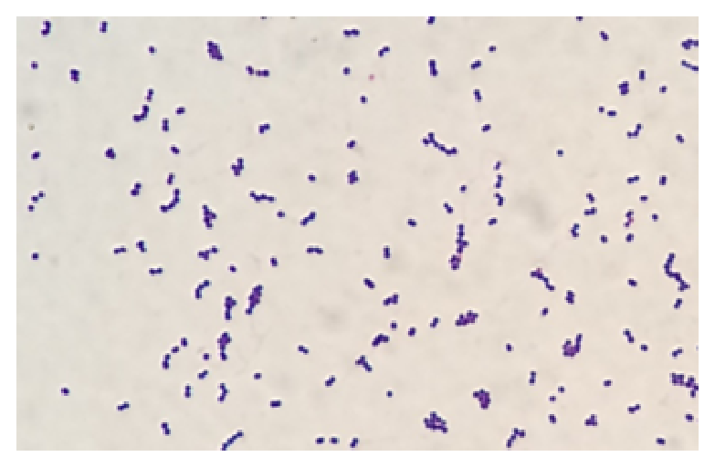
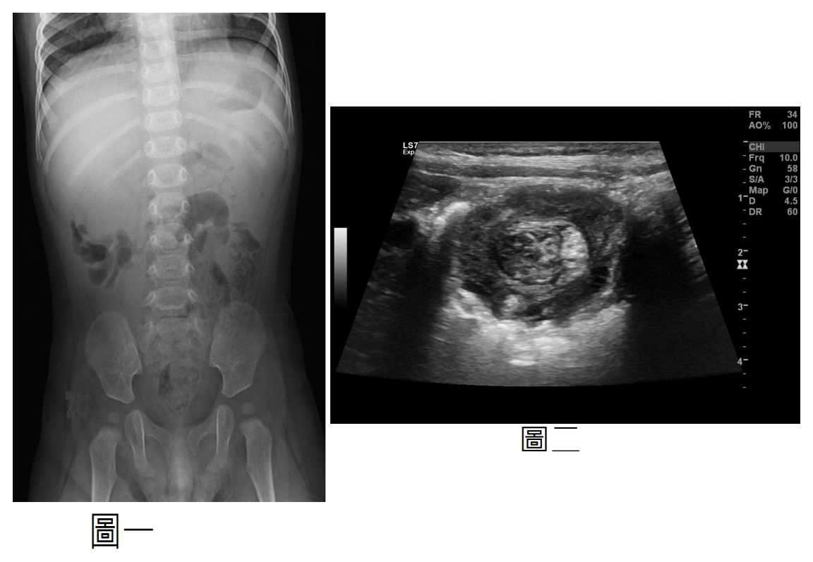
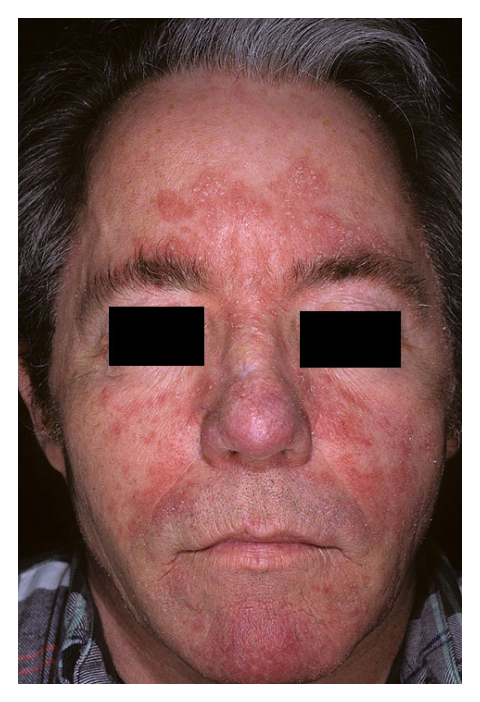
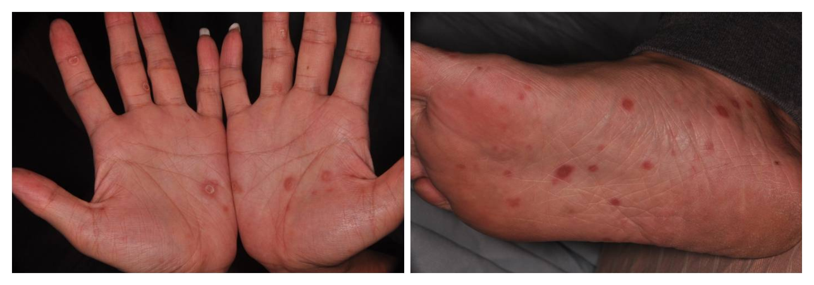
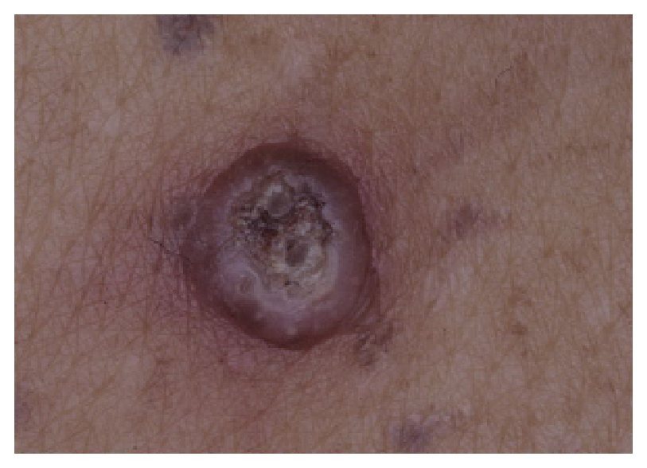
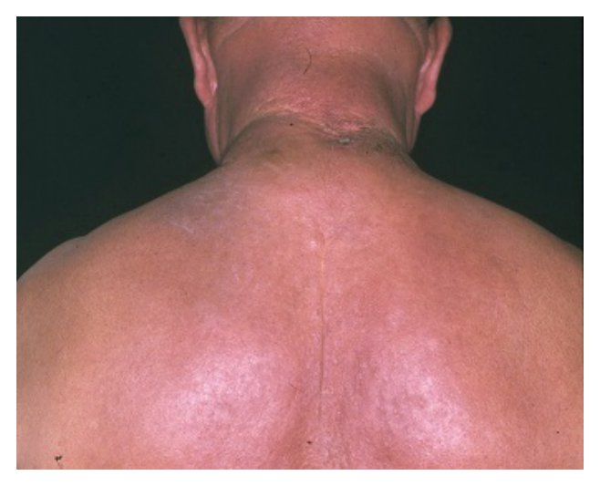
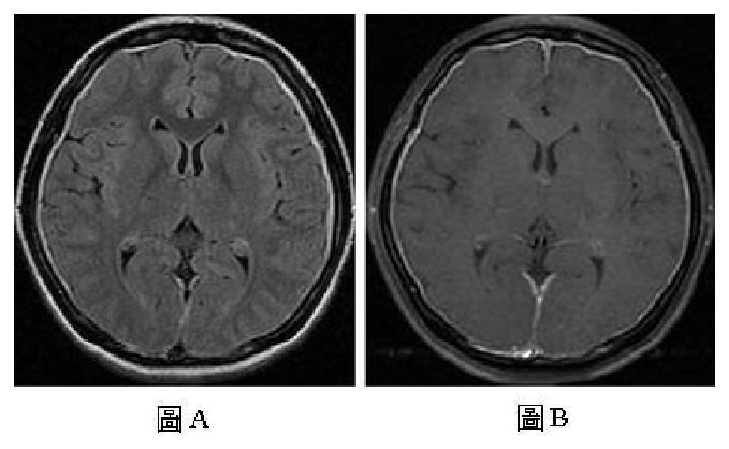

開卷有益 ／
醫師 ／ 醫學（四）（包括小兒科、皮膚科、神經科、精神科等科目及其相關臨床實例與醫學倫理） ／ 110 年第 1 次110 年第 1 次醫師醫學（四）（包括小兒科、皮膚科、神經科、精神科等科目及其相關臨床實例與醫學倫理）試題與答案
這一頁是民國 110 年第 1 次醫師醫學（四）（包括小兒科、皮膚科、神經科、精神科等科目及其相關臨床實例與醫學倫理）的整份歷屆試題，共 80 題，題目與標準答案出自考選部「國家考試試題及測驗式試題答案」開放資料，其中 80 題附有詳解。以下逐題列出題幹、選項與答案；要計時作答或記錄成績，請用線上練習。
考選部原始場次代碼：110020
線上作答這一科 →
全部 80 題
第 1 題
5歲女童發燒5天住院，身體診察有雙眼皮浮腫、肝脾腫大、頸部淋巴結腫大和扁桃腺有象牙白的滲出物，抽血檢查如下：Hb：11 g/dL，Hct：34%，WBC：18300/uL，Atypical lymphocyte：18%，Platelet：350000/uL，GOT：188 IU/L， GPT：374 IU/L，CRP：0.9 mg/dL。此女童最可能是感染下列何種病原體？
（A） 肺炎鏈球菌（Streptococcus pneumoniae）（B） 白色念珠菌（Candida albicans）（C） EB病毒（Epstein-Barr virus）（D） 腸病毒（Enterovirus）答案：（C）
詳解與考點 正解：發燒、滲出性扁桃腺炎、頸部淋巴結腫大、肝脾腫大，加上非典型淋巴球18%與轉胺酶上升。這組合典型指向傳染性單核球增多症（infectious mononucleosis），最常見病原為 EB 病毒，故選 C。
A：肺炎鏈球菌可造成細菌感染，但不能完整解釋非典型淋巴球、肝脾腫大與明顯肝炎型生化變化。
B：白色念珠菌多造成口咽鵝口瘡，並非此種全身性單核球症候群的典型病原。
D：腸病毒可引起發燒與咽炎，但肝脾腫大、非典型淋巴球及滲出性扁桃腺炎的組合較支持 EB 病毒。
本題考點：傳染性單核球增多症（infectious mononucleosis）；EB病毒（Epstein-Barr virus）；非典型淋巴球（atypical lymphocyte）與肝脾腫大的臨床辨識。
第 2 題
1歲大男嬰於接種水痘和麻疹-德國麻疹-腮腺炎疫苗2天後開始高燒6天，經診斷為川崎氏症（Kawasakidisease）並接受高劑量免疫球蛋白治療，出院後服用每天5mg/公斤阿斯匹靈治療。現已出院滿1個月，關於預防接種建議，下列何者最為正確？
（A） 因正在服用阿斯匹靈，不能接種流感疫苗（B） 1歲3個月大時可以如期接種活性日本腦炎疫苗（C） 1個月後應重新接種水痘和麻疹-德國麻疹-腮腺炎疫苗（D） 肺炎鏈球菌疫苗接種期程不受影響答案：（D）
詳解與考點 正解：接受高劑量免疫球蛋白後的疫苗安排。免疫球蛋白中的抗體會干擾活性減毒疫苗的免疫反應，故水痘與麻疹－德國麻疹－腮腺炎疫苗須延後；非活性肺炎鏈球菌疫苗不受此干擾，接種期程不受影響，故選 D。不同免疫球蛋白製劑與疫苗的間隔屬時效敏感建議
A：服用低劑量阿斯匹靈不是流感疫苗禁忌；反而應降低罹患流感後與阿斯匹靈相關併發症的風險。
B：活性日本腦炎疫苗可能受免疫球蛋白影響，不能僅按原訂月齡如期接種。
C：接種活性疫苗後接受免疫球蛋白可能使該次免疫反應失效，但不是出院1個月後一律重打；應依有效間隔重新規劃。
本題考點：靜脈免疫球蛋白（intravenous immunoglobulin, IVIG）與活性減毒疫苗（live attenuated vaccine）的交互影響；非活性疫苗（inactivated vaccine）通常可照常接種。
第 3 題
25歲媽媽未規則產檢，急自然產娩出新生兒，患嬰出生後因呼吸窘迫進加護病房並做抽血檢查，2天後血液細菌培養有細菌滋生，Gram stain smear如附圖所示，下列敘述何者正確？

（A） 此圖細菌為革蘭氏陰性（B） 最常見的感染細菌為李斯特菌（Listeria monocytogenes）（C） 最有可能的感染途徑是經由母體產道上行性感染（ascending infection）導致（D） 此菌為新生兒泌尿道最常見之致病細菌答案：（C）
詳解與考點 正解：附圖可見細菌呈紫色、球菌並多呈鏈狀排列，符合革蘭氏陽性鏈球菌；結合未規則產檢、出生後不久即呼吸窘迫與血液培養陽性，最符合 B 群鏈球菌（group B Streptococcus, Streptococcus agalactiae）造成的早發型新生兒敗血症。此菌可先在母體陰道或直腸定殖，於分娩前後經產道上行感染、胎膜破裂後感染羊水，或在嬰兒通過產道時垂直傳播，故選 C。
A：革蘭氏陰性菌在 Gram stain 下通常呈紅色或粉紅色；圖中菌體呈紫色，代表保留結晶紫染色，為革蘭氏陽性菌，故此敘述錯誤。
B：李斯特菌（Listeria monocytogenes）雖可經胎盤造成新生兒感染，且在塗片上可見革蘭氏陽性短桿菌，但圖中是鏈狀球菌，並非短桿菌形態。早發型新生兒敗血症的典型重要病原菌為 B 群鏈球菌與大腸桿菌，不能以李斯特菌作為最常見病原菌。
D：新生兒泌尿道感染最常見的致病菌是大腸桿菌（Escherichia coli），屬革蘭氏陰性桿菌；本圖的革蘭氏陽性鏈狀球菌不符合此典型病原菌。
本題考點：B 群鏈球菌（group B Streptococcus, Streptococcus agalactiae）為革蘭氏陽性鏈狀球菌，可造成早發型新生兒敗血症與肺炎；革蘭氏染色（Gram stain）中紫色鏈狀球菌提示革蘭氏陽性鏈球菌；垂直傳播（vertical transmission）可經母體產道上行感染或分娩時暴露而發生。
第 4 題
關於預防注射的建議，下列何者錯誤？
（A） 早產兒的預防注射是依出生後年紀施打（B） 早產兒施打五合一疫苗的劑量要減半（C） 施打高劑量免疫球蛋白後11個月內不可施打活性疫苗（D） B型肝炎疫苗與五合一疫苗可以同時施打答案：（B）
詳解與考點 正解：早產兒接種五合一疫苗是否要減量。疫苗劑量是依製劑與年齡訂定，不因早產便將五合一疫苗減半；早產兒通常依出生後年齡接受常規完整劑量，因此 B 錯誤。題內活性疫苗等待時間屬疫苗指引的時效敏感內容
A：早產兒多以出生後的實足年齡安排常規預防接種，而非改用矯正年齡，敘述正確。
C：高劑量免疫球蛋白可干擾活性疫苗的反應，應保留適當間隔；題述11個月是此類安排的原則性表達，非答案。
D：B型肝炎疫苗與五合一疫苗可於不同注射部位同時施打，並非互相禁忌。
本題考點：早產兒（preterm infant）的預防接種原則；疫苗劑量（vaccine dose）不因早產減半；免疫球蛋白（immunoglobulin）對活性疫苗的影響。
第 5 題
最常見引起成人（adults）及兒童（children）感冒（Common cold）的病毒，為下列何者？
（A） 流感病毒（Influenza viruses）（B） 鼻病毒（Rhinoviruses）（C） 腸病毒（Enteroviruses）（D） 腺病毒（Adenoviruses）答案：（B）
詳解與考點 正解：成人與兒童最常見的普通感冒病原。鼻病毒（rhinoviruses）是普通感冒最常見的病毒，特別易造成上呼吸道症狀，故選 B。
A：流感病毒可造成流行性感冒與全身症狀，並非普通感冒最常見的病原。
C：腸病毒可引起手足口病、疱疹性咽峽炎等多種表現，但不是普通感冒的最常見原因。
D：腺病毒能造成咽結膜熱或呼吸道感染，卻不如鼻病毒常見；它看似也會造成感冒樣症狀，但流行病學排序不同。
本題考點：普通感冒（common cold）；鼻病毒（rhinoviruses）；上呼吸道感染（upper respiratory tract infection）的常見病原。
第 6 題
有關哮吼（Croup），下列何者描述最不恰當？
（A） 頸部X光片可見thumb sign（B） 6個月至3歲為好發年齡（C） 嚴重病童建議使用類固醇治療（D） 好發季節為晚秋和早冬較寒冷的氣候答案：（A）
詳解與考點 正解：哮吼的頸部X光典型影像。哮吼（croup）為聲門下水腫，正位頸部X光可見尖塔徵象（steeple sign）；thumb sign 是會厭炎（epiglottitis）側位影像的表現，因此 A 最不恰當。
B：哮吼好發於6個月至3歲幼兒，與典型年齡相符。
C：類固醇可減輕聲門下水腫，對中重度病童是重要治療，敘述適當。
D：哮吼常在晚秋與初冬流行，和副流感病毒等病原的季節性相符。
本題考點：哮吼（croup）；尖塔徵象（steeple sign）；會厭炎（epiglottitis）的拇指徵象（thumb sign）鑑別。
第 7 題
純母乳哺餵之足月新生兒在第5天大時被發現皮膚較黃，檢驗全血清膽紅素值為19 mg/dL，直接型膽紅素值為0.5 mg/dL，下列處置何者最不適合？
（A） 可檢驗是否有貧血情形（B） 建議接受膽道胰管磁振造影檢查（C） 建議給與照光治療（D） 建議增加母乳餵食次數答案：（B）
詳解與考點 正解：第5天、純母乳、總膽紅素19 mg/dL而直接膽紅素僅0.5 mg/dL，屬以非結合型膽紅素為主的黃疸。應評估溶血等原因、增加有效餵食並依風險評估照光；膽道胰管磁振造影是評估膽道阻塞等結合型黃疸的檢查，最不適合，故選 B。
A：檢查是否貧血有助評估溶血性黃疸，屬合理處置。
C：總膽紅素是否達照光門檻須合併出生週數、日齡與危險因子判讀；本題情境下建議照光是合理選項。
D：母乳攝取不足可加重黃疸，增加有效餵食次數有助增加排便與膽紅素排出。
本題考點：新生兒黃疸（neonatal jaundice）；非結合型高膽紅素血症（unconjugated hyperbilirubinemia）；結合型黃疸（conjugated hyperbilirubinemia）的膽道評估。
第 8 題
關於38週的新生男嬰，出生後第1天身體診察的發現，下列何者最為異常？
（A） 心跳次數130次／分鐘（B） 呼吸次數50次／分鐘（C） 頭圍30公分（D） 身長50公分答案：（C）
詳解與考點 正解：38週足月新生兒第1天的身體測量。心跳130次／分鐘、呼吸50次／分鐘與身長50公分都在常見範圍；頭圍30公分明顯偏小，應警覺小頭症（microcephaly）或量測、胎兒生長等問題，故選 C。
A：新生兒安靜時心跳約可落在100至160次／分鐘，130次／分鐘可接受。
B：新生兒呼吸約可落在30至60次／分鐘，50次／分鐘屬常見範圍。
D：足月新生兒身長約50公分，與題幹相符，非最異常發現。
本題考點：新生兒生命徵象（neonatal vital signs）；頭圍（head circumference）；小頭症（microcephaly）的初步辨識。
第 9 題
根據臺灣兒科醫學會指引建議，母親有下列何種狀況仍可以親自哺餵母乳？
（A） 乳房有活動性單純疱疹（HSV）感染（B） 肺結核菌（Tuberculosis）感染已接受2週適當治療（C） 人類免疫不全病毒（HIV）感染（D） 人類嗜T淋巴球病毒（HTLV）感染答案：（B）
詳解與考點 正解：母親感染後是否仍可直接哺乳。肺結核病人在已接受適當治療2週且臨床狀況合宜時，可親自哺乳；主要顧慮是飛沫傳播，並非乳汁本身是主要傳染途徑，故選 B。此題引用臺灣兒科醫學會指引，實際隔離與哺乳安排須依當時感染管制建議
A：乳房有活動性 HSV 病灶時，嬰兒接觸病灶有感染風險，應避免直接由患側乳房哺餵。
C：HIV 可經母乳傳播；在題目所採臺灣指引架構下，不列為可親自哺乳的情況。
D：HTLV 也可經母乳傳播，故不屬本題所問可親自哺餵的選項。
本題考點：母乳傳播（breast milk transmission）；肺結核（tuberculosis）的感染管制；HSV、HIV與HTLV感染的哺乳風險。
第 10 題
37週出生體重3980公克的新生兒，身體診察發現無呼吸窘迫，右肩內縮，右手臂往內轉（Internal rotation），右手掌呈現內旋（Pronation）姿勢，其抓握反射正常，驚嚇反射左手正常但右手無法舉起，其他神經學檢查正常。最有可能神經受損的部位為何？
（A） C1、C2（B） C3、C4（C） C5、C6（D） C7、C8答案：（C）
詳解與考點 正解：患側肩內收、手臂內轉與前臂旋前，而抓握反射保留，為 Erb palsy 的侍者小費姿勢（waiter's tip posture）。此為上臂神經叢 C5、C6 受損；抓握反射保留亦支持較低節段未受損，故選 C。
A：C1、C2 受損主要影響高位頸部功能，無法產生典型上臂神經叢麻痺姿勢。
B：C3、C4 較相關於頸部及膈神經功能，與本例肩、肘姿勢不符。
D：C7、C8 受損較可造成下臂神經叢麻痺與抓握無力；本例抓握正常，反而是強力鑑別線索。
本題考點：Erb 麻痺（Erb palsy）；上臂神經叢（upper brachial plexus）C5、C6 損傷；侍者小費姿勢（waiter's tip posture）。
第 11 題
下列何項不是逐步式鑑別診斷（Setpwise diagnostic approach）兒童慢性腹瀉（Chronic diarrhea）的建議 ？
（A） 感染性檢查如糞便細菌培養需考慮（B） 可安排前白蛋白（Prealbumin）檢驗（C） 糖化血色素（HbA1c）是有效判讀營養不良程度的生物標記（D） 過敏性評估（Allergic workup）在兒童慢性腹瀉有其角色答案：（C）
詳解與考點 正解：兒童慢性腹瀉的逐步鑑別與營養評估。HbA1c 反映一段時間的血糖控制，不是判讀營養不良程度的有效生物標記；營養不良較應整合生長曲線、膳食史與適當營養指標，故 C 不是建議項目。
A：糞便細菌培養等感染性檢查可依病程、暴露史與糞便特徵選擇，慢性腹瀉的鑑別中有其位置。
B：前白蛋白可作為營養狀態的輔助資訊，但會受發炎等因素影響，不能單獨診斷；仍比 HbA1c 更符合題目所述營養評估方向。
D：過敏性腸炎或食物蛋白相關疾病是兒童慢性腹瀉的可能病因，適當個案可做過敏性評估。
本題考點：兒童慢性腹瀉（chronic diarrhea）的鑑別診斷；營養評估（nutritional assessment）；HbA1c反映血糖控制而非營養不良。
第 12 題
關於兒童急性闌尾炎（Acute appendicitis）之敘述，下列何者正確？
（A） 大部分病童之腹部X光片可見右下腹糞石（Fecalith）（B） 非傷寒沙門氏桿菌（Nontyphoidal Salmonella）感染性腸炎不會引起急性闌尾炎（C） 典型（Typical）的急性闌尾炎病童，臨床表現通常為先腹痛後嘔吐（D） 病童身體檢查時若無腹部肌肉僵直（Muscle guarding），可排除急性闌尾炎破裂答案：（C）
詳解與考點 正解：典型急性闌尾炎疼痛與嘔吐的先後順序。內臟痛先出現，隨後發炎刺激腹膜而疼痛局部化；噁心、嘔吐通常發生在腹痛之後，因此 C 正確。
A：腹部X光並非急性闌尾炎的主要診斷工具，且多數病童不會在X光看到右下腹糞石。
B：非傷寒沙門氏桿菌感染可造成腸炎、淋巴組織發炎，偶可誘發或模擬急性闌尾炎；「不會」過度絕對。
D：腹膜刺激徵象可能不典型，尤其幼兒或早期、局限性破裂時；沒有肌肉僵直不能排除闌尾炎破裂。
本題考點：急性闌尾炎（acute appendicitis）的典型病程；內臟痛（visceral pain）與壁層腹膜痛（parietal peritoneal pain）；兒童闌尾炎破裂的臨床判讀。
第 13 題
有關膽道閉鎖（Biliary atresia）與新生兒肝炎（Neonatal hepatitis）之敘述，下列何者正確？
（A） 膽道閉鎖的發生率稍高於新生兒肝炎的發生率（B） 肝臟病理切片中，膽道閉鎖可見小膽管增生（Bile ductular proliferation）；新生兒肝炎可見發炎細胞浸潤，局部肝細胞壞死（C） 膽道閉鎖目前尚未有確定的病因；而新生兒肝炎的病毒性病因主要是B型肝炎病毒（D） 膽道閉鎖在滿4個月大時手術預後較佳；新生兒肝炎則以內科治療為主答案：（B）
詳解與考點 正解：膽道閉鎖與新生兒肝炎的病理鑑別。膽道閉鎖（biliary atresia）因膽汁流出受阻，肝臟可見小膽管增生；新生兒肝炎（neonatal hepatitis）較可見肝細胞損傷、發炎細胞浸潤等肝炎性變化，故 B 正確。
A：兩者發生率不能以此敘述作為穩定鑑別，且題幹所稱膽道閉鎖稍高並非本題正確重點。
C：膽道閉鎖病因未完全確定尚可，但新生兒肝炎的病因廣泛，不能概括為主要由B型肝炎病毒造成。
D：膽道閉鎖應盡早接受Kasai手術以改善膽汁引流，延至4個月才手術並非預後較佳；新生兒肝炎則依病因與支持治療處理。
本題考點：膽道閉鎖（biliary atresia）；新生兒肝炎（neonatal hepatitis）；小膽管增生（bile ductular proliferation）與早期手術評估。
第 14 題
有關嬰幼兒及兒童期每日膳食營養素參考攝取量（RDIs）的建議，下列何者錯誤？
（A） 1歲以下的嬰兒攝取植物性蛋白占總蛋白質2/3以上為宜（B） 在兒童期時，鈣的攝取量隨著年齡增加而增加（C） 在兒童期時，磷的攝取量隨著年齡增加而增加（D） 在兒童期時，鋅的攝取量隨著年齡增加需些微增加答案：（A）
詳解與考點 正解：嬰兒蛋白質來源的建議。1歲以下嬰兒以母乳或配方奶為主要營養來源，蛋白質品質與胺基酸組成很重要；並無「植物性蛋白必須占總蛋白質2/3以上」的建議，反而過度以植物性來源取代奶類可能不利於滿足嬰兒所需營養，故錯誤的是 A。
B：兒童成長期間骨骼持續礦化，鈣需求會隨年齡及生長階段提高；這是合理的營養素參考攝取量趨勢，故不是錯誤敘述。
C：磷與骨骼、牙齒的礦化及能量代謝相關，兒童期隨生長增加其建議攝取量，敘述正確。
D：鋅參與生長、免疫與多種酵素功能，兒童隨年齡增加的需求量會小幅上升，故此敘述正確。
本題考點：嬰幼兒營養（infant nutrition）——嬰兒蛋白質應兼顧品質與完整營養，而非設定植物性蛋白占多數；膳食營養素參考攝取量（dietary reference intakes, DRIs）會反映兒童生長及骨骼礦化需求。
第 15 題
9個月大男嬰發生一陣陣無法安撫的哭鬧，時間持續3小時，有嘔吐3次，但沒有發燒和腹瀉症狀。腹部X光（圖一）和腹部超音波（圖二），最有可能的診斷為何？

（A） 急性闌尾炎（Acute appendicitis）（B） 嬰兒腸絞痛（Infantile coli）（C） 腸套疊（Intussusception）（D） 腸道旋轉不良（Intestinal malrotation）答案：（C）
詳解與考點 正解：9個月大嬰兒突發陣發性、難以安撫的哭鬧合併嘔吐，是腸套疊的典型表現。圖二腹部超音波可見腸管橫切面的同心圓「靶心徵象」（target sign），代表一段腸管套入另一段腸管；圖一腹部X光亦見腸氣分布異常。腸套疊常發生於6個月至3歲，故選 C。
A：急性闌尾炎在9個月大嬰兒較少見，且通常以持續性腹痛、發燒、食慾下降與腹部壓痛為主；本題的間歇性劇烈哭鬧及超音波靶心徵象更符合腸套疊。
B：嬰兒腸絞痛多見於較小嬰兒，雖可哭鬧不安，但不會造成腸管同心圓套入的超音波影像，也通常沒有反覆嘔吐與腹部影像異常。
D：腸道旋轉不良常以膽汁性嘔吐表現，若併中腸扭轉可迅速惡化；影像評估重點為腸道位置異常或上腸繫膜血管關係改變，並非本圖所示的腸管靶心徵象。
本題考點：腸套疊（intussusception）是嬰幼兒常見腸阻塞原因，典型為陣發性腹痛、嘔吐與後期血便；腹部超音波的靶心徵象（target sign）或甜甜圈徵象（doughnut sign）是重要診斷線索；須與嬰兒腸絞痛及腸道旋轉不良（intestinal malrotation）鑑別。
第 16 題
5歲女童接受化學藥物治療後，發現有輕微蛋白尿與尿糖現象，抽血檢查顯示血中鉀離子2.8 mmol/L，鈉離子146 mmol/L，氯離子115 mmol/L。血液pH值7.2，重碳酸根離子（HCO3-）18 mmol/L，BE：-4.5 mmol/L，女童Serum anion gap數值為何？
（A） 13（B） 29（C） 11（D） 6答案：（A）
詳解與考點 正解：計算血清陰離子間隙（serum anion gap）。常用公式為 Na⁺－（Cl⁻＋HCO₃⁻）；代入 Na 146 mmol/L、Cl 115 mmol/L、HCO₃⁻ 18 mmol/L，先算 115+18=133 mmol/L，再算 146-133=13 mmol/L，故選 A。血鉀通常不列入此常用計算法。
B：29 是把數值錯誤組合後得到的結果，未依 Na⁺－（Cl⁻＋HCO₃⁻）計算，故錯。
C：11 未正確扣除氯離子與重碳酸根的總和；本題的中間值應為 133 mmol/L，不會得到此值。
D：6 同樣不符合公式代入結果；血鉀 2.8 mmol/L 雖異常，但不是本題常用陰離子間隙公式的加項。
本題考點：血清陰離子間隙（serum anion gap）——常用公式為 Na⁺－（Cl⁻＋HCO₃⁻），用於判讀代謝性酸中毒是否合併未測量陰離子增加；本題計算值為 13 mmol/L。
第 17 題
造成慢性腎臟病兒童身材矮小的原因，下列敘述何者錯誤？
（A） 腎骨失養症（Renal osteodystrophy）（B） 代謝性酸中毒（C） 生長激素分泌下降（D） 貧血答案：（C）
詳解與考點 正解：慢性腎臟病兒童的矮小機轉。此類病童常見營養不良、代謝性酸中毒、腎骨失養症與貧血等多重因素；生長問題主要是生長激素阻抗及 IGF-1 軸反應異常，不能簡化為「生長激素分泌下降」，故錯誤的是 C。
A：腎骨失養症（renal osteodystrophy）與礦物質、骨代謝失衡有關，會妨礙骨骼正常生長，故是可能原因。
B：代謝性酸中毒會影響骨代謝、蛋白質代謝與生長，慢性存在時可造成生長遲滯，敘述正確。
D：貧血可使組織氧氣供應及整體健康受影響，亦常與慢性腎臟病的生長不良並存，故不是錯誤敘述。
本題考點：慢性腎臟病的生長遲滯（growth failure in chronic kidney disease）——病因包括代謝性酸中毒、腎骨失養症、營養與貧血；生長激素軸的核心問題是生長激素阻抗（growth hormone resistance），而非單純分泌不足。
第 18 題
下列有關單純型熱性痙攣（simple febrile seizure）的敘述，何者錯誤？
（A） 抽搐不超過15分鐘（B） 通常為局部型抽搐（focal convulsion）（C） 24小時之內抽搐不會再復發（D） 抽搐後可以短暫意識混亂答案：（B）
詳解與考點 正解：單純型熱性痙攣的定義。其特徵為全身性發作、持續不超過15分鐘、24小時內不復發，故「通常為局部型抽搐」與定義相反，錯誤的是 B。局部型發作看似也可在發燒時發生，但它會使熱性痙攣歸入複雜型而非單純型。
A：抽搐不超過15分鐘是單純型熱性痙攣的條件之一，敘述正確。
C：24小時內不再復發也是單純型熱性痙攣的條件；若同一發燒病程內反覆發作，則屬複雜型特徵。
D：發作後可有短暫意識混亂或嗜睡的恢復期表現，並不因此改變單純型的判定，故敘述正確。
本題考點：單純型熱性痙攣（simple febrile seizure）——全身性（generalized）、不超過15分鐘、24小時內不復發；局部性（focal）、延長或復發則為複雜型熱性痙攣（complex febrile seizure）的警訊。
第 19 題
下列何種肌肉疾病，是因肌肉細胞的Dystrophin蛋白發生質或量的變異造成的？
（A） Myotonic muscular dystrophy（B） Central core disease（C） Spinal muscular atrophy（D） Becker muscular dystrophy答案：（D）
詳解與考點 正解：dystrophin 蛋白的量或功能異常。Becker muscular dystrophy 由 DMD 基因變異造成 dystrophin 異常，通常仍可產生部分功能的蛋白質，故選 D；它與 Duchenne muscular dystrophy 同屬 dystrophinopathy。
A：myotonic muscular dystrophy 的主要病理是重複序列擴增所致的肌強直與多系統表現，並非 dystrophin 缺陷。
B：central core disease 多與骨骼肌鈣離子調控相關的基因異常有關，病理可見肌纖維 central cores，不是 dystrophin 異常。
C：spinal muscular atrophy 的主要病灶在運動神經元，常與 SMN 蛋白不足相關；肌肉無力雖明顯，卻不是肌肉 dystrophin 的疾病。
本題考點：肌失養蛋白病（dystrophinopathy）——Duchenne muscular dystrophy 與 Becker muscular dystrophy 都由 DMD 基因相關的 dystrophin 異常造成；須與神經元疾病 spinal muscular atrophy 區分。
第 20 題
關於兒童生長發育的描述，下列何者最不像有內分泌異常的問題？
（A） 幼稚園大班的5歲男孩，最近生長速率一年只長高2公分（B） 小學一年級剛入學的7歲男生，媽媽注意到有陰毛發育（C） 剛升國一的13歲女生，班上很多同學月經都來了，但自己初經還沒來（D） 高一的16歲男生，發現半年來胸部隆起越來越明顯，且有明顯的硬塊答案：（C）
詳解與考點 正解：「最不像」內分泌異常。13歲女生尚未初經本身仍可落在青春期發育的正常變異；若沒有乳房發育延遲、成長異常或其他症狀，不能單憑同學已來月經就判為內分泌疾病，故選 C。
A：5歲男孩一年僅長高2公分，生長速率明顯偏慢，應評估甲狀腺功能、生長激素軸及慢性疾病等原因，較像內分泌異常。
B：7歲男童出現陰毛屬過早的第二性徵線索，可能與腎上腺雄性素或性早熟相關，需要進一步評估。
D：16歲男生進行性乳房隆起合併明顯硬塊，雖青春期可有生理性男性女乳症，但其年齡、進展與腫塊仍應排除荷爾蒙失衡或其他病因；因此比（C）更需要評估。
本題考點：青春期正常變異（normal pubertal variation）——初經時間存在個體差異；生長速率過慢（poor growth velocity）、男童過早第二性徵與持續性男性女乳症（gynecomastia）是內分泌評估線索。
第 21 題
滿月的男嬰因嚴重尿道下裂來求診，檢查發現陰莖長度1.8公分，尿道開口位於陰囊與陰莖交界處，出生後抽血檢查染色體核型為46,XY。下列那一項是最不可能的診斷？
（A） Partial androgen insensitivity syndrome（B） Gonadal dysgenesis（C） Congenital adrenal hyperplasia due to 21-hydroxylase deficiency（D） 5α-reductase deficiency答案：（C）
詳解與考點 正解：46,XY嬰兒有嚴重尿道下裂與小陰莖，表示男性外生殖器男性化不足。21-hydroxylase deficiency 所致的先天性腎上腺增生症會增加腎上腺雄性素；在46,XY個體不會造成此種男性化不足，故最不可能的是 C。
A：partial androgen insensitivity syndrome 對雄性素反應不完全，可使46,XY個體出現小陰莖、尿道下裂及不同程度外生殖器不完全男性化，故可能。
B：gonadal dysgenesis 可導致睪丸功能與雄性素生成不足，因而可能出現46,XY性發育差異及外生殖器男性化不足。
D：5α-reductase deficiency 使睪固酮轉換為較具外生殖器男性化作用的 dihydrotestosterone 減少，可造成46,XY嬰兒尿道下裂與小陰莖，故可能。
本題考點：46,XY性發育差異（46,XY differences of sex development）——外生殖器男性化需足夠雄性素、雄性素受體反應與5α-reductase 轉換；21-hydroxylase deficiency 的雄性素增加主要造成46,XX個體男性化。
第 22 題
4歲小男孩被診斷為Henoch-Schönlein Purpura（HSP），血液檢查報告最有可能是下列何種組合？
（A） WBC：12000 /μL、Hb 9.0 g/dL、platelet：5000 /μL（B） WBC：12000 /μL、Hb 12.0 g/dL、platelet：235000 /μL（C） WBC：5000 /μL、Hb 12.0 g/dL、platelet：5000 /μL（D） WBC：5000 /μL、Hb 9.0 g/dL、platelet：235000 /μL答案：（B）
詳解與考點 正解：HSP 的紫斑屬非血小板低下性紫斑。Henoch-Schönlein purpura 為 IgA 血管炎（IgA vasculitis），血小板通常正常，發炎時白血球可輕度上升；（B）的 WBC 12000/μL、Hb 12.0 g/dL、platelet 235000/μL 最符合，故選 B。
A：platelet 5000/μL 是嚴重血小板低下，較應考慮血小板減少相關出血，而非典型 HSP。
C：雖然 WBC 5000/μL 可見於許多狀態，但 platelet 5000/μL 仍與 HSP 常見的正常血小板不符。
D：platelet 正常看似符合 HSP，但 Hb 9.0 g/dL 的貧血與 WBC 5000/μL 並非此題最典型的組合；相較之下（B）的血紅素與血小板皆在合理範圍，並反映可能的發炎性白血球上升。
本題考點：IgA 血管炎（IgA vasculitis/Henoch-Schönlein purpura）——可見可觸及紫斑、腹痛、關節症狀與腎臟侵犯，但血小板計數通常正常；須與免疫性血小板低下紫斑症（immune thrombocytopenia）區分。
第 23 題
3歲半的小朋友，沒有發燒，昨晚夜間咳嗽明顯。身體診察發現呼吸聲音明顯，聽診雙側有喘息音（Wheezing），給與短效型支氣管擴張劑（Bronchodilator）後，喘息音明顯改善，下列何種診斷最有可能？
（A） 上呼吸道感染（Upper respiratory tract infection）（B） 細支氣管炎（Bronchiolitis）（C） 氣喘（Asthma）（D） 氣道異物阻塞（Airway foreign body obstruction）答案：（C）
詳解與考點 正解：學齡前兒童夜間咳嗽、雙側喘鳴，且短效支氣管擴張劑後明顯改善。這組可逆性氣流阻塞的線索最支持氣喘（asthma），故選 C。
A：上呼吸道感染主要影響鼻、咽與喉部，可有咳嗽，但不能充分解釋雙側喘鳴及吸入支氣管擴張劑後的明顯改善。
B：細支氣管炎多見於較小嬰兒，常伴病毒感染症狀；雖可喘鳴，但本題3歲半、無發燒且對支氣管擴張劑反應佳，更像氣喘。
D：氣道異物阻塞常有突然發作、單側呼吸音減弱或局部喘鳴等線索；雙側喘鳴與藥物後改善使其較不可能。
本題考點：兒童氣喘（childhood asthma）——反覆或變異性的咳嗽、喘鳴與夜間症狀，加上可逆性支氣管阻塞（reversible bronchoconstriction）支持診斷；須與細支氣管炎及異物吸入鑑別。
第 24 題
有關兒童異位性皮膚炎（Atopic dermatitis）的臨床表現，下列敘述何者最不恰當？
（A） 在嬰幼兒時期，皮膚病灶好發在包尿布區域（B） 兒童常因為癢的感受而搔抓（C） 兒童皮膚會比較乾燥（D） 兒童年紀漸大後，皮膚病灶好發在四肢屈側答案：（A）
詳解與考點 正解：異位性皮膚炎在嬰幼兒的典型分布。嬰幼兒病灶常見於臉頰、頭皮與四肢伸側，尿布區常因濕潤與遮蔽而相對少受累；因此（A）稱好發於包尿布區域最不恰當，故選 A。
B：搔癢（pruritus）是異位性皮膚炎的核心症狀，兒童因癢而搔抓的敘述正確。
C：皮膚屏障功能受損使皮膚乾燥（xerosis）常見，故此敘述正確。
D：隨年齡增長，病灶分布常轉為肘窩、膕窩等四肢屈側，這是常見臨床型態。
本題考點：異位性皮膚炎（atopic dermatitis）——特徵為搔癢、皮膚乾燥與年齡相關的病灶分布；嬰幼兒偏臉部及伸側，兒童與成人偏屈側。
第 25 題
有關預防嬰幼兒過敏的觀念，下列敘述何者最不恰當？
（A） 建議孕婦飲食應避免高過敏食物（例如海鮮、花生等）（B） 4～6個月大嬰兒可正常添加副食品，不需延後添加來預防過敏（C） 母乳哺育對於預防氣喘的效果不確定（D） 目前國際指引尚未建議嬰幼兒常規性使用益生菌來預防過敏答案：（A）
詳解與考點 正解：「預防」嬰幼兒過敏，而非已確診食物過敏者的避敏治療。一般不建議孕婦為預防子女過敏而常規避免海鮮、花生等高過敏食物；無必要的限制可能造成營養不足，故最不恰當的是 A。過敏預防建議會隨新證據與指引更新而調整，這是本題把握度較低的時效性爭點。
B：4～6個月可依嬰兒發展狀況添加副食品，不以延後添加作為常規過敏預防，敘述符合目前的預防觀念。
C：母乳哺育有多項健康益處，但對預防氣喘的效果不能視為確定，因此此敘述並不不恰當。
D：益生菌對過敏預防的效果受菌株、族群與研究設計影響，未作為所有嬰幼兒的常規預防措施，故此敘述合理。
本題考點：過敏預防（allergy prevention）——一般不以孕期全面避開過敏原食物作為常規策略；副食品添加（complementary feeding）不宜僅為預防過敏而延後；益生菌（probiotics）的常規預防角色具時效性與證據差異。
第 26 題
有關兒童急性淋巴性白血病的治療，下列何者最正確？
（A） 大多急性淋巴性白血病患童使用單一化療藥物即可治癒（B） 無需誘導期（induction phase）化療，可直接進入鞏固期（consolidation phase）化療（C） 中樞神經系統的預防多使用腰椎穿刺化療藥物注射（D） 放射治療在兒童急性淋巴性白血病為第一線治療選擇答案：（C）
詳解與考點 正解：兒童急性淋巴性白血病須預防中樞神經侵犯。治療會以腰椎穿刺施作鞘內化學治療（intrathecal chemotherapy）進行中樞神經預防，故（C）最正確。
A：兒童急性淋巴性白血病通常須依風險採多藥合併化療；單一化療藥物不足以達到標準治療效果。
B：誘導期化療（induction phase）用以取得緩解，是後續鞏固治療前的重要階段，不能省略。
D：放射治療並非大多數兒童急性淋巴性白血病的第一線治療；其使用須依特定風險與病灶情境評估。
本題考點：兒童急性淋巴性白血病（childhood acute lymphoblastic leukemia）——治療採多期、多藥化療，包括誘導期（induction phase）與鞏固期（consolidation phase）；中樞神經預防常用鞘內化學治療（intrathecal chemotherapy）。
第 27 題
有關兒童感染性心內膜炎（Infective endocarditis），下列何者不是感染後預後不佳的高風險（highest risk）族群？
（A） 複雜發紺性先天性心臟病的病童（B） 年齡小於1歲的病童（C） 曾接受人工血管分流手術的病童（D） 患有風濕性心臟病的病童答案：（B）
詳解與考點 正解：官方答案為 B；惟題目將「感染後預後不佳的最高風險」界定為何種分類存有爭點。小於 1 歲可與兒童感染性心內膜炎住院死亡等不良預後相關，不能逕稱其不是不良預後因子；本題仍依官方答案選 B
A：複雜發紺性先天性心臟病常有異常血流與複雜結構，是感染性心內膜炎不良預後的高風險背景。
C：人工血管分流手術後有人工材質及複雜心臟病病史，屬較高風險族群。
D：風濕性心臟病可遺留瓣膜損傷，增加感染性心內膜炎的嚴重性與併發症風險，故不是本題答案。
本題考點：兒童感染性心內膜炎（pediatric infective endocarditis）——不良預後與複雜先天性心臟病（complex congenital heart disease）、人工心血管材質（prosthetic cardiovascular material）、瓣膜病變及年齡等因素相關；須區分感染風險與感染後預後。
第 28 題
下列何者不是嬰兒期需要修補心室中膈缺損（Ventricular septal defect, VSD）的適應症？
（A） 無法以藥物控制的心臟衰竭（Heart failure）（B） 9個月大時出現肺高壓（Pulmonary hypertension）臨床症狀（C） 出現生長遲滯表現（Failure to thrive）對內科治療無效（D） 超音波檢查 Pulmonary-to-systemic flow ratio（Qp：Qs ratio）＜ 2：1答案：（D）
詳解與考點 正解：嬰兒期 VSD 修補的適應症須反映顯著左至右分流及其臨床後果。單憑（D）的 Qp:Qs<2:1，且未提供左心容量負荷、心室功能異常或症狀，不足以構成嬰兒期修補適應症，故選 D。
A：無法以藥物控制的心臟衰竭代表 VSD 分流已造成嚴重臨床影響，是考慮早期修補的適應症。
B：嬰兒期出現肺高壓臨床症狀表示肺血流負荷與肺血管病變風險增加，需評估及時修補。
C：生長遲滯且內科治療無效，表示餵食與能量消耗已受心臟衰竭影響，是修補的重要臨床指標。
本題考點：心室中膈缺損（ventricular septal defect, VSD）——修補決策考量左至右分流量（left-to-right shunt）、心臟衰竭、肺高壓與生長遲滯；Qp:Qs 反映肺循環與體循環血流比。
第 29 題
足月嬰兒2個月大在健兒門診時被聽到第3度收縮期的心雜音，懷疑是心室中膈缺損（Ventricular septaldefect）。下列那一種臨床表現最有可能暗示該心臟缺損已經對小嬰兒產生不良的影響？
（A） 每餐餵食時間需超過1小時（B） 每分鐘的呼吸次數為32下（C） 在右側肋骨下緣可摸到約1公分的肝臟（D） 在哭泣厲害的時候會出現唇色稍微偏紫的情形答案：（A）
詳解與考點 正解：2個月大VSD是否已造成心臟衰竭。每餐餵食超過1小時表示吸吮時呼吸與能量負荷過大，是嬰兒心臟衰竭及餵食困難的典型警訊，故選 A。
B：每分鐘呼吸32下未顯示明顯呼吸急促，單獨看不支持VSD已造成不良影響。
C：嬰兒在右肋弓下可觸及約1公分肝臟可為正常生理發現；明顯且進行性的肝腫大才較支持右心鬱血。
D：單純VSD通常為左至右分流，不應因哭泣而出現發紺；唇色偏紫看似提示心臟問題，但更應考慮發紺性心臟病或其他原因，非典型VSD衰竭指標。
本題考點：嬰兒心臟衰竭（infant heart failure）——常見餵食費力、餵食時間延長、盜汗、呼吸急促與生長不良；心室中膈缺損（ventricular septal defect）在肺血流增加時可引起此類表現。
第 30 題
下列那一種先天性心臟病或心臟手術術後，最不可能被聽到連續性心雜音（Continuous murmur）？
（A） 開放性動脈導管（Patent ductus arteriosus）（B） 左冠狀動脈到右心房瘻管（C） 接受Blalock-Taussig shunt術後（D） 大型的肺動脈-肺靜脈瘻管（Pulmonary arteriovenous fistula）本題送分，無標準答案
詳解與考點 本題官方公告送分。
第 31 題
一位新生兒經身體診察懷疑唐氏症（Down syndrome），血液染色體核型（Karyotyping）證實為47,XX,+21。下列敘述何者最為正確？
（A） 病童的染色體都可以發現三條獨立的21號染色體（B） 除外觀異常外，通常會呈現高張力（Hypertonia）（C） 對於唐氏症的診斷，斷掌（Simian crease）特異性高（D） 唐氏症有可能合併心內膜墊缺損（Endocardial cushion defect）答案：（D）
詳解與考點 正解：唐氏症與先天性心臟病的關聯。唐氏症可合併心內膜墊缺損（endocardial cushion defect），亦即房室中膈缺損（atrioventricular septal defect），故（D）最正確。
A：47,XX,+21 顯示受檢的周邊血細胞有 3 條游離 21 號染色體；但單一次周邊血核型不能保證病童所有組織細胞皆如此，因此「都可以發現」過度絕對。
B：唐氏症新生兒常見肌張力低下（hypotonia），不是高張力，故錯。
C：斷掌（simian crease）可見於唐氏症，但也可見於一般人及其他狀態，特異性不足，不能作為高度特異的診斷依據。
本題考點：唐氏症（Down syndrome）——常見肌張力低下（hypotonia）與先天性心臟病，尤其房室中膈缺損（atrioventricular septal defect）；染色體核型（karyotyping）可辨識第 21 三體。
第 32 題
關於Inborn errors of metabolism，下列敘述何者錯誤？
（A） 大多數Inborn errors of metabolism為性聯遺傳模式（B） 新生兒篩檢（Newborn screening）可幫助早期診斷（C） 臨床上大多呈現非特異性症狀，常與敗血症無法區分（D） 患者體液或尿液的味道有時可提供診斷的線索答案：（A）
詳解與考點 正解：遺傳模式。先天代謝異常（inborn errors of metabolism）大多數為常染色體隱性遺傳（autosomal recessive inheritance），不是性聯遺傳，故錯誤的是 A。
B：新生兒篩檢可在症狀尚未明顯前辨識部分可治療的代謝疾病，幫助早期診斷與介入，敘述正確。
C：許多代謝危象的症狀如餵食差、嘔吐、嗜睡、酸中毒或休克缺乏特異性，臨床上確實常須與敗血症鑑別。
D：特定代謝物累積可使汗液、尿液或體味出現特殊氣味，有時能提供診斷線索，敘述正確。
本題考點：先天代謝異常（inborn errors of metabolism）——多為常染色體隱性遺傳（autosomal recessive inheritance）；代謝危象（metabolic crisis）可模仿敗血症，新生兒篩檢（newborn screening）有助早期偵測。
第 33 題
下列有關臺灣新生兒「篩檢疾病」與其「篩檢項目」之配對，何者錯誤？
（A） 苯酮尿症：Phenylalanine（B） 高胱胺酸尿症：Methionine（C） 先天性甲狀腺功能低能症：TSH（D） 先天性腎上腺增生症：Androgen答案：（D）
詳解與考點 正解：先天性腎上腺增生症的新生兒篩檢標記。篩檢主要測定17-hydroxyprogesterone，而非籠統的 androgen；因此（D）配對錯誤，故選 D。
A：苯酮尿症以 phenylalanine 異常升高作為篩檢線索，配對正確。
B：高胱胺酸尿症可透過 methionine 異常作為篩檢線索之一，配對正確。
C：先天性甲狀腺功能低下症以 TSH 篩檢是常用方式，配對正確。
本題考點：新生兒篩檢（newborn screening）——苯酮尿症（phenylketonuria）檢測 phenylalanine、先天性甲狀腺功能低下症（congenital hypothyroidism）檢測 TSH、先天性腎上腺增生症（congenital adrenal hyperplasia）以17-hydroxyprogesterone 為重要標記。
第 34 題
使用口服isotretinoin治療青春痘時，下列何者為絕對禁忌？
（A） B型肝炎帶原（B） 培養出格蘭氏陰性菌（C） 對抗生素有抗藥性（D） 懷孕答案：（D）
詳解與考點 正解：口服 isotretinoin 的強致畸胎性。懷孕時使用可造成嚴重胚胎畸形，因此懷孕是絕對禁忌，故選 D。
A：B型肝炎帶原者需評估肝功能及肝炎狀態，因 isotretinoin 可能影響肝功能，但帶原本身不等同於絕對禁忌。
B：培養出格蘭氏陰性菌不是 isotretinoin 的絕對禁忌；臨床處置應依感染部位與病情決定，不能將培養結果直接等同禁用。
C：對抗生素有抗藥性反而可能是評估其他痤瘡治療策略的背景，並非 isotretinoin 的絕對禁忌。
本題考點：isotretinoin——口服 retinoid 類藥物具高度致畸胎性（teratogenicity），懷孕為絕對禁忌；治療前後亦須依臨床情況監測肝功能與其他不良反應。
第 35 題
關於異位性皮膚炎診斷的主要依據，下列何者錯誤？
（A） 皮疹於嬰幼兒時期主要出現在臉部及四肢伸側（B） 通常伴隨難以控制的癢感（C） 通常有家族或個人藥物過敏史（D） 通常呈現慢性且反覆發作病程答案：（C）
詳解與考點 正解：異位性皮膚炎（atopic dermatitis）的診斷主要依據。典型表現包括嬰幼兒臉部與四肢伸側濕疹、劇癢及慢性反覆病程，並常合併個人或家族的異位性體質；「藥物過敏史」不是其典型診斷依據。故題目所問錯誤敘述為 C。
A：嬰幼兒的異位性皮膚炎常累及臉部及四肢伸側；年長兒與成人才較常見屈側苔癬化，故此敘述正確。
B：搔癢是異位性皮膚炎的核心症狀，反覆搔抓又會破壞皮膚屏障、加重濕疹，故此敘述正確。
D：慢性、反覆發作是異位性皮膚炎的典型病程；急性濕疹雖也可癢，卻不能僅憑一次皮疹取代此病程特徵。
本題考點：異位性皮膚炎（atopic dermatitis）的臨床診斷——劇癢、典型年齡與分布、慢性反覆病程及異位性體質是重要線索；藥物過敏（drug allergy）不是其典型主要依據。
第 36 題
罹患Parkinson's disease的50歲男性，近來常有頭皮屑及頭皮發癢，在臉上眉毛以及鼻子四周出現如圖所示的脫屑性紅斑，最可能的診斷是：

（A） 脂漏性皮膚炎（seborrheic dermatitis）（B） 缺脂性皮膚炎（asteatotic dermatitis）（C） 異位性皮膚炎（atopic dermatitis）（D） 接觸性皮膚炎（contact dermatitis）答案：（A）
詳解與考點 正解：圖中可見額頭、眉毛、鼻翼與雙側鼻唇溝分布的紅斑伴細碎脫屑；病人另有頭皮屑與搔癢，且 Parkinson's disease 是脂漏性皮膚炎常見的相關神經疾病。這種集中在皮脂腺豐富部位的油膩性或細碎鱗屑紅斑，最符合脂漏性皮膚炎（seborrheic dermatitis），故選 A。
B：缺脂性皮膚炎（asteatotic dermatitis）源於角質層脂質不足，多見於高齡者的小腿、軀幹或四肢，皮膚乾燥龜裂而呈裂紋樣濕疹；與圖示的眉間、鼻翼及鼻唇溝脫屑紅斑分布不符。
C：異位性皮膚炎（atopic dermatitis）常有慢性復發性濕疹、明顯搔癢及個人或家族過敏體質；成人常侵犯屈側皮膚、頸部或手部，並非以頭皮屑合併中央臉部皮脂腺豐富區的脫屑紅斑為典型表現。
D：接觸性皮膚炎（contact dermatitis）通常與特定外來物接觸的部位及邊界相對應，例如化妝品、髮品或金屬所接觸處，急性期可有明顯水腫、丘疹或水疱；本題圖示分布對稱地集中於眉毛、鼻翼與鼻唇溝，且合併頭皮屑及 Parkinson's disease，更支持脂漏性皮膚炎而非接觸反應。
本題考點：脂漏性皮膚炎（seborrheic dermatitis）好發於頭皮、眉毛、鼻翼、鼻唇溝等皮脂腺豐富區，表現為紅斑與鱗屑；Parkinson's disease 與脂漏性皮膚炎的較高盛行率相關；分布型態可用於和缺脂性皮膚炎（asteatotic dermatitis）、異位性皮膚炎（atopic dermatitis）及接觸性皮膚炎（contact dermatitis）鑑別。
第 37 題
40歲男性，一週前有輕微感冒症狀，至診所求診，服用五天藥物之後感冒症狀緩解，但昨天發現自己手腳掌開始出現無痛性紅斑如圖所示，微癢，下列敘述何者錯誤？

（A） 應詢問有何特殊接觸史，以鑑別診斷二期梅毒（B） 應該抽血檢查VDRL及 HIV（C） 應詢問是否有口腔及眼睛黏膜等症狀，以鑑別診斷藥物過敏（D） 應抽血檢查IgE，若數值異常升高，則可診斷為異位性皮膚炎答案：（D）
詳解與考點 正解：圖中手掌、足底可見多發紅色丘疹與部分靶形（targetoid）病灶；結合感冒後及服藥後出現的病史，須考慮多形性紅斑（erythema multiforme）、藥物相關皮疹及二期梅毒等鑑別診斷。血清總 IgE 升高僅代表過敏傾向或其他免疫狀態，既不具異位性皮膚炎（atopic dermatitis）的專一性，也不能單獨確立診斷，故錯誤的是 D。
A：二期梅毒可出現累及手掌與足底的無痛性、非搔癢或輕度搔癢斑丘疹；應先詢問性接觸史及其他風險暴露，作為鑑別診斷的一部分，故此敘述正確。
B：懷疑二期梅毒時可作非梅毒螺旋體試驗 VDRL 篩檢，並依結果配合梅毒螺旋體特異性檢驗確認；評估性傳染病風險時併行 HIV 檢驗亦屬適當處置，故非錯誤選項。
C：服藥後出現皮疹須詢問口腔、眼睛等黏膜是否受累；若有黏膜糜爛、疼痛或眼部症狀，須警覺較嚴重的藥物皮膚不良反應，如 Stevens-Johnson syndrome，故此鑑別方向正確。
本題考點：多形性紅斑（erythema multiforme）可呈靶形病灶並累及四肢末端；二期梅毒（secondary syphilis）是手掌、足底皮疹的重要鑑別；異位性皮膚炎（atopic dermatitis）為臨床診斷，總 IgE 並非單獨診斷依據。
第 38 題
60歲男性，近三個月內於臉頰上出現一直徑約1.5公分快速成長的腫瘤，病灶中央陷凹填塞角質的結節（nodule），外觀有點像是個火山口（crater）如圖所示，下列何者為最可能的診斷？

（A） 基底細胞癌（basal cell carcinoma）（B） 波文氏病（Bowen's disease）（C） 角化棘皮瘤（keratoacanthoma）（D） 惡性黑色素瘤（malignant melanoma）答案：（C）
詳解與考點 正解：圖中可見臉部圓頂狀結節，中央形成凹陷並充滿角質栓，呈火山口樣外觀；再結合病灶在3個月內快速長至約1.5 cm，最符合角化棘皮瘤（keratoacanthoma）。角化棘皮瘤常發生於日光暴露部位，典型演變為快速增大的中央角質栓性結節；臨床與病理上可與鱗狀細胞癌（squamous cell carcinoma）相近，通常須完整切除或取樣確認，故選 C。
A：基底細胞癌（basal cell carcinoma）也常見於臉部，但典型為具珍珠樣光澤、邊緣隆起伴微血管擴張的丘疹或結節，或形成不易癒合的潰瘍；其生長多較緩慢，並非本題所示快速形成、中央由角質栓填塞的對稱火山口樣結節。
B：波文氏病（Bowen's disease）是表皮內鱗狀細胞癌（squamous cell carcinoma in situ），常表現為界線清楚、持續存在的紅褐色鱗屑斑塊，可能略微隆起，但不以快速增大的中央角質栓性火山口結節為特徵。
D：惡性黑色素瘤（malignant melanoma）主要以色素性病灶的非對稱、邊界不規則、顏色不均與變化為警訊；圖中病灶以中央角質栓及火山口樣結構為主，未呈現典型黑色素瘤的色素分布與外形特徵，故不符。
本題考點：角化棘皮瘤（keratoacanthoma）——日光暴露處快速生長的圓頂狀結節，中央可見角質栓與火山口樣凹陷；鱗狀細胞癌（squamous cell carcinoma）——角化棘皮瘤與其臨床及組織學表現可重疊，需以切除或病理評估處置；非黑色素癌皮膚癌（non-melanoma skin cancer）——基底細胞癌常為緩慢生長的珍珠樣、邊緣捲起病灶，與本題形態不同。
第 39 題
臺灣人最常見的皮膚黑色素細胞癌 （cutaneous melanoma）為下列那一型？
（A） 結節型黑色素細胞癌（nodular melanoma）（B） 肢端黑痣型黑色素細胞癌（acral lentiginous melanoma）（C） 表淺擴散型黑色素細胞癌（superficial spreading melanoma）（D） 惡性黑痣型黑色素細胞癌（lentigo maligna melanoma）答案：（B）
詳解與考點 正解：「臺灣人最常見」的黑色素細胞癌亞型。相較於白人常見的表淺擴散型，亞洲族群較常見肢端黑痣型黑色素細胞癌（acral lentiginous melanoma），好發於手掌、足底及甲床等肢端無毛皮膚，故選 B。
A：結節型黑色素細胞癌（nodular melanoma）以垂直生長、快速形成隆起結節為特色，侵襲性可高，但不是臺灣人最常見的亞型。
C：表淺擴散型黑色素細胞癌（superficial spreading melanoma）在歐美族群較常見，容易因其常見性而成為誘答；但本題限定臺灣人，流行病學型態不同。
D：惡性黑痣型黑色素細胞癌（lentigo maligna melanoma）多與長期日光曝曬相關，常見於高齡者臉部等慢性日曬區，非臺灣最常見型。
本題考點：黑色素細胞癌（cutaneous melanoma）的亞型與族群分布——肢端黑痣型（acral lentiginous melanoma）在亞洲人較常見，應與表淺擴散型（superficial spreading melanoma）區分。
第 40 題
55歲男性慢性糖尿病病患，上背皮膚出現如圖所示無症狀的增厚硬化病灶，最有可能是下列何種疾病？

（A） 庫欣氏症候群（Cushing syndrome）（B） 硬腫病（scleredema）（C） 硬化性黏液水腫（scleromyxedema）（D） 皮肌炎（dermatomyositis）答案：（B）
詳解與考點 正解：圖中可見後頸至上背呈瀰漫、對稱性的皮膚增厚與硬化，沒有明顯鱗屑、丘疹或肌炎特徵；55歲慢性糖尿病男性出現此種無症狀、木質樣硬化斑，最符合糖尿病相關硬腫病（scleredema diabeticorum），故選 B。
A：庫欣氏症候群常見向心性肥胖、滿月臉、紫色伸展紋、皮膚變薄與易瘀青；並非後頸及上背的瀰漫性硬化增厚。
C：硬化性黏液水腫常見廣泛、密集的蠟樣丘疹與皮膚硬化，常累及臉部、手部與上軀幹，且通常與單株免疫球蛋白異常相關；圖示為平坦而瀰漫的後頸上背硬化，臨床情境也更支持糖尿病相關硬腫病。
D：皮肌炎的皮膚表現以紫紅色皮疹為主，如眼瞼的 heliotrope rash、關節伸側的 Gottron papules，並常合併近端肌無力；無法解釋圖中的無症狀後頸上背木質樣增厚硬化。
本題考點：硬腫病（scleredema）是結締組織疾病，糖尿病相關型常稱 scleredema diabeticorum，典型累及後頸、肩部與上背並呈非凹陷性硬化；須與有丘疹的硬化性黏液水腫（scleromyxedema）及發炎性皮疹合併肌無力的皮肌炎（dermatomyositis）鑑別。
第 41 題
有關皮肌炎（dermatomyositis）的敘述，下列何者錯誤？
（A） Gottron papules及 heliotrope sign為皮肌炎典型的皮膚表現（B） 病程中大多沒有搔癢症狀（C） 成人皮肌炎患者有較高的罹癌風險，例如卵巢癌、鼻咽癌（D） 皮膚鈣化（calcinosis cutis）較常出現在小兒皮肌炎答案：（B）
詳解與考點 正解：皮肌炎（dermatomyositis）的皮膚症狀。皮肌炎除特徵性皮疹外，搔癢可相當明顯，並非多數患者沒有搔癢；故錯誤敘述為 B。
A：Gottron papules 是手指關節伸側的紫紅色丘疹，heliotrope sign 是上眼瞼紫紅色變色，兩者皆為皮肌炎典型皮膚表現，故正確。
C：成人皮肌炎與惡性腫瘤相關性增加，臨床須依個別風險進行腫瘤評估；卵巢癌、鼻咽癌均為可聯想到的相關腫瘤，故此敘述正確。
D：皮膚鈣化（calcinosis cutis）較常見於小兒皮肌炎，可造成疼痛、潰瘍或功能影響，故此敘述正確。
本題考點：皮肌炎（dermatomyositis）——Gottron papules 與 heliotrope sign 是辨識線索；搔癢可顯著；成人病人須注意惡性腫瘤關聯，小兒較易出現皮膚鈣化（calcinosis cutis）。
第 42 題
6歲男童，數月前臉部出現數塊脫屑性白色斑，用伍氏燈（Wood's lamp）照射並無特別顏色顯現，進一步優先之檢查為何？
（A） 皮膚切片（B） KOH鏡檢（C） 貼膚試驗（D） 黴菌培養答案：（B）
詳解與考點 正解：兒童臉部脫屑性白斑，需先區分白色糠疹、體癬與白斑症。Wood's lamp 未出現白斑症常見的明顯增白，仍應以快速、直接的 KOH 鏡檢尋找角質層黴菌菌絲，優先排除體癬，故選 B。
A：皮膚切片屬侵入性檢查，通常保留給臨床表現不典型或非侵入性檢查無法釐清時；本題第一步應先做 KOH 鏡檢。
C：貼膚試驗用於評估接觸性過敏原，不能直接判定這類脫屑性白斑是否為皮癬菌感染，故不優先。
D：黴菌培養可協助鑑定菌種，但耗時較久；KOH 鏡檢較快，故在初步診斷上更優先。
本題考點：色素減退斑（hypopigmented patch）的鑑別——Wood's lamp 可協助辨識白斑症（vitiligo）；KOH preparation 是懷疑皮癬菌感染（dermatophytosis）時的優先直接檢查。
第 43 題
有關乾癬（psoriasis）病人的指甲病變之敘述，下列何者錯誤？
（A） nail pitting, oil spots, onycholysis, subungual hyperkeratosis都是乾癬常見的指甲病變，其中以nail pitting最常見（B） nail pitting是影響 nail matrix 角化異常所致（C） nail pitting與發生乾癬性關節病變有強烈相關性（D） oil spots是具高度專一性的乾癬指甲病變本題送分，無標準答案
詳解與考點 本題官方公告送分。
第 44 題
12歲男性，出生即發現右臉有朱紅胎記，合併有癲癇、左側肢體肌力較差，最可能的診斷為何？
（A） 結節硬化症（tuberous sclerosis）（B） 神經纖瘤症（neurofibromatosis）（C） von Hippel-Lindau疾病（von Hippel-Lindau disease）（D） Sturge-Weber疾病（Sturge-Weber disease）答案：（D）
詳解與考點 正解：出生即有單側臉部朱紅色胎記，合併癲癇及對側肢體無力，提示葡萄酒色斑伴同側軟腦膜血管畸形，為 Sturge-Weber disease 的典型組合，故選 D。
A：結節硬化症（tuberous sclerosis）可有癲癇及臉部血管纖維瘤，但不以出生即見的單側葡萄酒色斑為典型，故不符。
B：神經纖瘤症（neurofibromatosis）較典型的是咖啡牛奶斑、神經纖維瘤與虹膜 Lisch 結節，無法解釋此朱紅胎記與局部神經症狀組合。
C：von Hippel-Lindau disease 以血管母細胞瘤及內臟腫瘤傾向為主，並非幼兒單側臉部葡萄酒色斑合併癲癇的典型疾病。
本題考點：Sturge-Weber disease——臉部葡萄酒色斑（port-wine stain）合併軟腦膜血管畸形可導致癲癇與對側神經缺損；屬神經皮膚症候群（neurocutaneous syndrome）。
第 45 題
下列遺傳性疾病，何者最容易有腦出血的併發症？
（A） 蛋白C缺乏症（protein C deficiency）（B） 蛋白S缺乏症（protein S deficiency）（C） 馮希伯–林島氏症（von Hippel-Lindau disease）（D） 抗凝血酶III缺乏症（antithrombin III deficiency）答案：（C）
詳解與考點 正解：最容易造成腦出血的遺傳疾病。von Hippel-Lindau disease 可發生中樞神經系統血管母細胞瘤（hemangioblastoma），病灶血管豐富且可出血，因此最符合腦出血併發症風險，故選 C。
A、B、D：蛋白 C 缺乏症（protein C deficiency）、蛋白 S 缺乏症（protein S deficiency）與抗凝血酶 III 缺乏症（antithrombin III deficiency）皆使抗凝血功能下降，主要增加靜脈血栓栓塞風險，而非自發性腦出血；三者同屬「易栓塞」而非「易出血」的誘答。
本題考點：von Hippel-Lindau disease——可合併中樞神經系統血管母細胞瘤（hemangioblastoma）及其出血風險；天然抗凝蛋白缺乏（natural anticoagulant deficiency）則以血栓傾向為主。
第 46 題
李小姐，45歲，因頭痛及癲癇發作，被診斷為腦靜脈栓塞（cerebral venous thrombosis）。對此疾病的敘述下列何者最正確？
（A） 腦靜脈栓塞不會合併腦出血（B） 電腦斷層攝影檢查（CT）較核磁共振攝影檢查（MRI）診斷價值高（C） 腦壓太高時，應考慮以腰椎穿刺做緊急腦脊髓液引流（D） 可給與抗凝血藥物治療答案：（D）
詳解與考點 正解：腦靜脈栓塞（cerebral venous thrombosis）雖可造成靜脈性梗塞與出血，但治療核心仍是抗凝血，以阻止血栓延伸並促進再通；因此（D）可給予抗凝血藥物是最正確的敘述。
A：腦靜脈栓塞可合併出血性靜脈梗塞，故「不會合併腦出血」錯誤。這是容易因擔心出血而誤選的誘答，但出血本身不否定抗凝治療原則。
B：診斷可使用 CT venography 或 MR venography；單純 CT 對靜脈竇血栓的敏感性有限，不能概括說較 MRI 有更高診斷價值。
C：顱內壓升高時腰椎穿刺可能改變壓力梯度並增加腦疝脫風險，不應作為緊急腦脊髓液引流的常規處置。
本題考點：腦靜脈栓塞（cerebral venous thrombosis）——可表現頭痛、癲癇與出血性靜脈梗塞；影像檢查用以確認靜脈血栓；抗凝血治療（anticoagulation）是重要處置原則。
第 47 題
一位28歲女性突然發生劇烈頭痛，當她躺下後數分鐘內會改善，起床後數分鐘內頭痛又會加劇。她接受注射顯影劑的腦部磁振造影檢查發現硬腦膜有瀰漫性的顯影。下列何者為最可能的診斷？
（A） 偏頭痛（B） 蜘蛛網膜下腔出血（C） 自發性顱內低壓性頭痛（D） 叢發性頭痛答案：（C）
詳解與考點 正解：頭痛在平躺後迅速改善、站起後加劇，是姿勢性頭痛的關鍵；合併顯影後瀰漫性硬腦膜增強，最符合腦脊髓液漏造成的自發性顱內低壓性頭痛（spontaneous intracranial hypotension），故選 C。
A：偏頭痛可伴噁心、畏光或活動加劇，但沒有以站立即惡化、平躺即改善為核心特徵，也不能典型解釋瀰漫性硬腦膜顯影。
B：蜘蛛網膜下腔出血常為突發雷擊樣頭痛，屬需緊急排除的診斷；但其典型病程不是規律姿勢性改善，MRI 的硬腦膜瀰漫顯影也較支持顱內低壓。
D：叢發性頭痛常為單側眼眶或顳部劇痛，伴同側自律神經症狀，與本題姿勢性頭痛及影像表現不符。
本題考點：自發性顱內低壓（spontaneous intracranial hypotension）——腦脊髓液漏（cerebrospinal fluid leak）可造成直立性頭痛與瀰漫性硬腦膜增強（pachymeningeal enhancement）。
第 48 題
下列關於顱內壓上升（increased intracranial pressure）之臨床徵候與檢視的敘述，何者錯誤？
（A） 嚴重的顱內壓上升，病人可能出現低血壓、心搏加速及頭痛的現象（B） 出現庫欣氏反射（Cushing reflex）暗示有續發急性腦疝脫的可能（C） 進行腰椎穿刺前的病人應先做腦部攝影（D） 可藉由眼底鏡檢視是否有視乳突水腫（papilledema）的現象答案：（A）
詳解與考點 正解：題目問錯誤敘述。嚴重顱內壓上升的 Cushing reflex 是高血壓、心搏過緩與呼吸型態異常，反映腦幹受壓；（A）寫成低血壓、心搏加速，與典型生理反應相反，故選 A。
B：Cushing reflex 代表嚴重顱內壓上升及腦幹受壓警訊，可能伴隨急性腦疝脫，敘述正確，故非答案。
C：疑有顱內壓升高或占位病灶時，腰椎穿刺前應先以腦部影像評估腦疝脫風險，敘述正確，故非答案。
D：眼底鏡可檢查視乳突水腫（papilledema），其出現支持顱內壓升高，故此敘述正確。
本題考點：顱內壓上升（increased intracranial pressure）——Cushing reflex 為高血壓、心搏過緩及呼吸異常；視乳突水腫（papilledema）是重要檢視線索；腰椎穿刺前須評估腦疝脫風險。
第 49 題
關於重積癲癇（status epilepticus）的敘述，下列何者錯誤？
（A） 在兒童之抽搐性重積癲癇（convulsive status epilepticus），死亡率為50%以上（B） 血中catecholamine濃度升高可誘發致死性心律不整（C） 所有罹患抽搐性重積癲癇（convulsive status epilepticus）的發燒病人，就算無明顯的腦膜炎跡象，也須做腰椎穿刺檢驗腦脊髓液（D） 所有罹患抽搐性重積癲癇（convulsive status epilepticus）之成人及無發燒症狀之孩童，均須接受神經影像學檢查，例如CT或MRI答案：（A）
詳解與考點 正解：官方答案為 A；兒童抽搐性重積癲癇確有死亡與神經傷害風險，但死亡率並非一般性地超過 50%，故（A）為錯誤敘述。惟（C）以「所有」發燒病人均須腰椎穿刺的表述也有時代性與指引爭點
B：持續抽搐可造成交感神經活化與 catecholamine 上升，進而增加心律不整等全身性併發症風險，敘述正確，故非答案。
C：發燒兒童的抽搐性重積癲癇須評估中樞神經感染；腰椎穿刺應依感染懷疑度、安全性與禁忌症判斷，不能將其視為所有病人無條件必做的處置。
D：成人及無發燒兒童發生抽搐性重積癲癇時，常需神經影像尋找結構性病因，CT 或 MRI 可作為評估工具，故非答案。
本題考點：抽搐性重積癲癇（convulsive status epilepticus）——除終止發作外，須同步處理呼吸循環併發症、感染與結構性腦病因；腰椎穿刺須依中樞感染風險與安全性個別判斷。
第 50 題
關於睡眠呼吸中止症（sleep apnea）的敘述，下列何者錯誤？
（A） 中樞型睡眠呼吸中止症（central sleep apnea）可發生於腦幹中風或腦幹發炎之病人（B） 阻塞型睡眠呼吸中止症（obstructive sleep apnea）常發生於肥胖短頸或肢端肥大症（acromegaly）之病人（C） 阻塞型睡眠呼吸中止症只發生於快速動眼期睡眠（REM sleep）（D） 連續氣道正壓呼吸器（CPAP）為睡眠呼吸中止症最常用且有效的治療方法答案：（C）
詳解與考點 正解：題目問錯誤敘述。阻塞型睡眠呼吸中止症（obstructive sleep apnea）可在 REM 與非 REM 睡眠發生，REM 期因肌張力下降而可能更嚴重，但絕非只發生於 REM 睡眠，故選 C。
A：腦幹中風或腦幹發炎可損害呼吸驅動調控，因而造成中樞型睡眠呼吸中止症（central sleep apnea），敘述正確。
B：肥胖短頸及肢端肥大症都可能使上呼吸道狹窄或塌陷傾向增加，是阻塞型睡眠呼吸中止症的典型危險因子，故正確。
D：連續氣道正壓呼吸器（continuous positive airway pressure, CPAP）可維持上呼吸道通暢，是阻塞型睡眠呼吸中止症最常用且有效的治療方式，故非答案。
本題考點：睡眠呼吸中止症（sleep apnea）——中樞型源於呼吸驅動障礙；阻塞型與上呼吸道塌陷相關，可在不同睡眠期出現；CPAP 是阻塞型的重要治療。
第 51 題
有關原發性常壓性水腦症（idiopathic normal pressure hydrocephalus）的臨床表現與檢查發現，何者正確？
（A） 病人很少併有尿失禁（B） 步態異常（gait disturbance）往往是第一個、也是最常見的症狀（C） 病人辨認人臉（face recognition）的功能障礙特別嚴重（D） 脊髓液引流術對步態不穩無法改善答案：（B）
詳解與考點 正解：原發性常壓性水腦症（idiopathic normal pressure hydrocephalus）的典型三徵是步態障礙、認知功能下降與尿失禁；其中步態障礙常最早出現、也最常見，故選 B。
A：尿失禁正是典型三徵之一，雖不一定一開始就出現，不能說病人很少併有，故錯。
C：本症認知障礙較偏額葉皮質下功能與精神動作遲緩，並非以辨認人臉功能特別嚴重為特徵；後者更應聯想到特定視覺辨識網路病變。
D：適當病人接受腦脊髓液引流測試後，步態可改善；這也有助評估分流術反應，故「無法改善」錯誤。
本題考點：原發性常壓性水腦症（idiopathic normal pressure hydrocephalus）——步態障礙（gait disturbance）、認知障礙與尿失禁三徵；步態通常最早且最明顯，腦脊髓液引流反應可提供治療線索。
第 52 題
有關早期阿茲海默症病人的腦脊髓液分析，下列何者最有可能？
（A） Aβ42上升、phosphorylated tau protein上升（B） Aβ42上升、phosphorylated tau protein下降（C） Aβ42下降、phosphorylated tau protein上升（D） Aβ42下降、phosphorylated tau protein下降答案：（C）
詳解與考點 正解：早期阿茲海默症（Alzheimer disease）的腦脊髓液生物標記組合是 Aβ42 下降與 phosphorylated tau protein 上升。前者反映 Aβ42 沉積於腦內斑塊、使腦脊髓液可測濃度下降；後者反映 tau 病理變化，故選 C。
A：此選項的 phosphorylated tau protein 上升方向正確，但 Aβ42 寫成上升；阿茲海默症的典型腦脊髓液變化是 Aβ42 下降，故錯。
B：Aβ42 與 phosphorylated tau protein 的方向皆與典型阿茲海默症生物標記相反，故錯。
D：Aβ42 下降符合，但 phosphorylated tau protein 下降不符；不可只抓到 amyloid 指標便忽略 tau 指標。
本題考點：阿茲海默症生物標記（Alzheimer disease biomarkers）——腦脊髓液 Aβ42 下降代表 amyloid deposition，phosphorylated tau protein 上升反映 tau pathology。
第 53 題
下列有關路易氏體失智症（dementia with Lewy bodies）的敘述，何者錯誤？
（A） 應儘量使用dopamine agonist以治療病人的parkinsonism的症狀（B） 早期即可能出現視幻覺（C） 出現動眼期睡眠行為障礙（REM sleep behavior disorder）（D） 常有不明原因意識不清、跌倒或昏倒答案：（A）
詳解與考點 正解：題目問路易氏體失智症（dementia with Lewy bodies）的錯誤敘述。此病人對多巴胺促效劑（dopamine agonist）及其他多巴胺藥物的精神症狀副作用可能敏感，使用時須審慎權衡，不能說應儘量使用；故選 A。
B：反覆且早期出現的視幻覺是路易氏體失智症的重要臨床特徵，故敘述正確。
C：動眼期睡眠行為障礙（REM sleep behavior disorder）與突觸核蛋白病變密切相關，可在失智症前後出現，故正確。
D：認知波動可表現為不明原因的意識不清，並可伴跌倒或昏倒，是支持路易氏體失智症的臨床線索，故非答案。
本題考點：路易氏體失智症（dementia with Lewy bodies）——認知波動、視幻覺、parkinsonism 與 REM sleep behavior disorder 是核心線索；治療 parkinsonism 時須注意精神症狀惡化。
第 54 題
下列何者非周邊神經病變之常見症狀？
（A） 運動功能障礙（B） 肌腱反射增強（C） 感覺功能障礙（D） 自律神經病變答案：（B）
詳解與考點 正解：周邊神經病變（peripheral neuropathy）會損及下運動神經元、感覺神經或自律神經；深部肌腱反射通常減弱或消失，而非增強。肌腱反射增強提示上運動神經元或中樞錐體徑病變，故選 B。
A：周邊運動神經受損可造成肌無力、肌萎縮與肌束顫動等運動功能障礙，故屬常見表現。
C：麻木、感覺異常、疼痛或感覺減退是周邊感覺神經病變常見症狀，故非答案。
D：自主神經纖維受損可造成姿勢性低血壓、排汗異常、腸胃蠕動或膀胱功能問題，故自律神經病變也可見於周邊神經病變。
本題考點：周邊神經病變（peripheral neuropathy）——可同時出現運動、感覺及自律神經異常；反射減弱（hyporeflexia）屬下運動神經元特徵，反射增強（hyperreflexia）偏向中樞病變。
第 55 題
有關疱疹病毒神經病變（neuropathy of herpes zoster）之敘述，下列何者最不恰當？
（A） 可能引起角膜（cornea）損傷（B） 疱疹病毒主要侵犯運動神經元（C） 好發於肋間神經（D） 好發於三叉神經第一分支答案：（B）
詳解與考點 正解：帶狀疱疹（herpes zoster）是水痘帶狀疱疹病毒在感覺神經節再活化，典型侵犯感覺神經皮節，而非主要侵犯運動神經元；故（B）最不恰當。少數病人可有節段性運動無力，但這不是其主要神經病變。
A：侵犯三叉神經眼分支時可累及角膜，造成角膜炎等眼部損傷，因此此敘述正確。
C：胸段皮節常見，故肋間神經分布是帶狀疱疹的好發區域之一，敘述正確。
D：三叉神經第一分支受侵犯時可出現額頭、眼周皮疹，且有眼部併發症風險，故此敘述正確。
本題考點：帶狀疱疹神經病變（neuropathy of herpes zoster）——病毒潛伏並在感覺神經節再活化，沿皮節分布；三叉神經眼分支（ophthalmic division）受累時須注意角膜傷害。
第 56 題
下列何者不是屬於離子通道病變（channelopathy）?
（A） 先天性肌強直症（myotonia congenita）（B） 先天性肌強直性痙攣病（paramyotonia congenita）（C） 高血鉀性週期性麻痺症（hyperkalemic periodic paralysis）（D） 肌強直性失養症（myotonic dystrophy）答案：（D）
詳解與考點 正解：題目問不屬於離子通道病變（channelopathy）者。肌強直性失養症（myotonic dystrophy）是以核酸重複序列擴增及 RNA 剪接異常為核心的多系統遺傳疾病，不是原發離子通道基因缺陷，故選 D。
A：先天性肌強直症（myotonia congenita）與骨骼肌氯離子通道異常相關，屬典型 channelopathy。
B：先天性肌強直性痙攣病（paramyotonia congenita）與骨骼肌鈉離子通道異常相關，故屬 channelopathy。
C：高血鉀性週期性麻痺症（hyperkalemic periodic paralysis）亦與骨骼肌鈉離子通道功能異常相關，故非答案。
本題考點：離子通道病變（channelopathy）——骨骼肌氯、鈉或鈣、鉀離子通道異常可造成肌強直或週期性麻痺；肌強直性失養症（myotonic dystrophy）則屬重複序列相關疾病。
第 57 題
如果要診斷為神經性梅毒合併失智症，下列那一組檢查結果最具有診斷的正確性？①血清之梅毒螺旋體血球凝集試驗（T. pallidum particle agglutination test, MHA-TP）為陽性反應 ②腦脊髓液之VDRL為陽性反應 ③腦脊髓液之TPHA為陽性反應 ④腦波呈現典型的週期性單側癲癇樣放電（periodic lateralized epileptiformdischarges）
（A） ①②（B） ②④（C） ①④（D） ③④答案：（A）
詳解與考點 正解：診斷神經性梅毒合併失智症時，先以血清梅毒螺旋體血球凝集試驗陽性證實梅毒感染的血清學背景，再以腦脊髓液 VDRL 陽性支持中樞神經系統受累；因此最具診斷正確性的組合為①②，即選 A。
B：②腦脊髓液 VDRL 陽性具有支持力，但④週期性單側癲癇樣放電（periodic lateralized epileptiform discharges）不是神經性梅毒的特異性診斷依據，故組合不對。
C：①可支持既往或目前梅毒感染，但④不是此病的關鍵診斷檢驗，無法取代腦脊髓液的特異性檢查。
D：③腦脊髓液 TPHA 可反映抗體進入腦脊髓液，特異性判讀不如腦脊髓液 VDRL；再加上④非特異性腦波所見，故非最佳組合。
本題考點：神經性梅毒（neurosyphilis）的檢驗判讀——血清梅毒螺旋體試驗（treponemal test）支持感染背景；腦脊髓液 VDRL 是支持中樞神經系統受累的重要特異性證據；腦波異常通常缺乏病因特異性。
第 58 題
關於治療結核菌腦膜炎的敘述，下列何者錯誤？
（A） 不可使用類固醇（corticosteroid）（B） 如果症狀與腦脊髓液檢查結果皆高度懷疑結核菌腦膜炎，就必須儘早投予抗結核菌藥物（C） 抗結核菌藥物需持續服用6個月以上（D） 使用isoniazid治療時需併用pyridoxine以避免發生周邊神經炎（peripheral neuropathy）答案：（A）
詳解與考點 正解：題目問結核菌腦膜炎（tuberculous meningitis）的錯誤敘述。結核菌腦膜炎可因發炎、水腫及顱內壓問題造成嚴重神經後遺症，輔助性類固醇（corticosteroid）在適當臨床情況可用來減少發炎相關傷害；故（A）「不可使用」為錯誤。
B：若症狀與腦脊髓液結果高度懷疑結核菌腦膜炎，治療延遲會增加不良神經預後，應儘早開始抗結核菌藥物，敘述正確。
C：結核菌腦膜炎的抗結核治療療程較肺結核長，需超過 6 個月，故此敘述正確。
D：isoniazid 可能造成周邊神經炎，併用 pyridoxine 可降低此風險，故此敘述正確。
本題考點：結核菌腦膜炎（tuberculous meningitis）——高度懷疑時應及早給予抗結核治療；輔助性類固醇（adjunctive corticosteroid）可用於控制發炎相關傷害；isoniazid 需注意周邊神經炎與 pyridoxine 預防。
第 59 題
雖無外界感官刺激，但知覺上卻感受到刺激存在，此症狀稱為：
（A） 錯覺（illusion）（B） 妄想（delusion）（C） 幻覺（hallucination）（D） 失憶（amnesia）答案：（C）
詳解與考點 正解：「無外界感官刺激，卻知覺到刺激」；這正是幻覺（hallucination）的定義。幻覺是沒有相應外在刺激時出現的感官知覺，可能是聽覺、視覺或其他感覺形式，故選 C。
A：錯覺（illusion）是把真實存在的外界刺激錯誤解讀，例如把陰影看成人；本題明示根本沒有外界刺激，故不符。
B：妄想（delusion）是無法以文化背景解釋且難以動搖的錯誤信念，屬思考內容異常，不是知覺異常。
D：失憶（amnesia）是記憶功能缺損，與憑空出現感官經驗無關。
本題考點：幻覺（hallucination）是無外在刺激的知覺；錯覺（illusion）是對真實刺激的誤認；妄想（delusion）則是固定的錯誤信念。
第 60 題
關於抗精神病藥物引起動作障礙（medication-induced movement disorders）的敘述，下列何者正確？
（A） rabbit syndrome的臨床表現是嘴唇與口周（perioral）的肌肉震顫（tremor）（B） 抗精神病藥物誘發之neuroleptic malignant syndrome好發於年長女性（C） 年輕男性是抗精神病藥物誘發parkinsonism的高風險族群（D） 年長女性是抗精神病藥物誘發角弓反張（opisthotonos）的高風險族群答案：（A）
詳解與考點 正解：抗精神病藥物造成的錐體外症狀（extrapyramidal symptoms）。rabbit syndrome 表現為嘴唇與口周肌肉規律、細小的震顫樣動作，通常不伴舌頭參與，故（A）描述正確。
B：神經阻斷劑惡性症候群（neuroleptic malignant syndrome, NMS）的危險因子包括年輕男性、藥物快速加量與脫水等，並非年長女性好發。
C：藥物誘發巴金森症（drug-induced parkinsonism）反而較常見於年長者與女性；年輕男性較須留意急性肌張力不全。
D：角弓反張是急性肌張力不全（acute dystonia）的嚴重表現，好發於年輕男性，而非年長女性；年長女性看似是藥物副作用高風險群，但不符合此一特定症候群。
本題考點：抗精神病藥物的動作障礙（medication-induced movement disorders）須依症候群辨識；rabbit syndrome 為口周規律動作，急性肌張力不全偏年輕男性，藥物誘發巴金森症偏年長女性。
第 61 題
關於雙相情緒障礙症（bipolar disorder）個案於懷孕期接受藥物治療之相關描述，下列何者錯誤？
（A） lithium使用與胎兒發生Ebstein氏三尖瓣膜異常症（Ebstein's anomaly）有關（B） valproic acid會增加胎兒有心臟畸型（cardiac malformation）的風險（C） lamotrigine使用可能與胎兒唇口裂（oral cleft）有關（D） carbamazepine使用與胎兒發生神經管異常有關本題送分，無標準答案
詳解與考點 本題官方公告送分。
第 62 題
在精神科急性病房，一名中年男性病人，在護理站徘徊，向護理人員求救，表示有外星人在監視他的一舉一動，甚至叫他去自殺；他腦內被植入可衛星定位的晶片，性命受到很大威脅。如果其診斷為思覺失調症（schizophrenia），下列敘述何者正確？
（A） 上述的症狀至少要有一年以上方能診斷為思覺失調症（B） 依現行精神衛生法之規定，病人因有極高自殺風險，若再經另一位精神科專科醫師鑑定後判定病人為嚴重病人，則可逕行強制住院達60天（C） 兒童時期發展疾患如注意力不足／過動症（attention-deficit / hyperactivity disorder）須先行排除，方能診斷為思覺失調症（D） 可開立risperidone 2mg治療上述疾病答案：（D）
詳解與考點 正解：題幹的被監視、腦內植入晶片與命令性幻聽符合思覺失調症（schizophrenia）的精神病性症狀；risperidone 是可用於治療此病的非典型抗精神病藥物（atypical antipsychotic），故（D）正確。2mg 可作為臨床起始劑量之一，但合宜劑量須依症狀與耐受性調整，此數值的個案適用性不確定。
A：思覺失調症要求連續疾病徵象至少 6 個月，其中活躍期症狀至少 1 個月，不是症狀必須持續 1 年。
B：強制住院的要件與期間受精神衛生法及程序保障規範，不能只因高自殺風險與另一位專科醫師判定，即逕以題述方式強制住院 60 天。
C：診斷時須鑑別自閉症類群障礙或溝通障礙等發展疾患；注意力不足／過動症本身並非須先排除才能診斷思覺失調症的疾病。
本題考點：思覺失調症（schizophrenia）的診斷病程至少 6 個月；非典型抗精神病藥物（atypical antipsychotics）可治療精神病性症狀；強制住院涉及法定要件與程序。
第 63 題
接受移植手術，術後身體狀況穩定的個案，仍需注意可能出現精神科併發症。以下何者最不會出現？
（A） 適應障礙症（adjustment disorder）（B） 創傷後壓力症（posttraumatic stress disorder）（C） 妄想症（delusional disorder）（D） 重鬱症（major depression）答案：（C）
詳解與考點 正解：移植後身體穩定仍可能出現的精神科併發症，問「最不會出現」。面對重大疾病、移植壓力、免疫抑制治療與生活調整，適應、情緒及創傷相關症狀都可發生；妄想症（delusional disorder）不是此族群典型的常見併發症，故選 C。
A：適應障礙症（adjustment disorder）可在面對移植、復原與角色改變等重大壓力源後發生，並非罕見。
B：移植前後的重症經驗、侵入性治療與死亡威脅可能構成創傷，因而可出現創傷後壓力症。
D：重鬱症（major depression）可影響移植後生活品質、治療遵從性與復原，是需要篩檢的情緒併發症。
本題考點：器官移植後的精神醫學（transplant psychiatry）常見適應障礙、憂鬱與創傷後壓力症；妄想症（delusional disorder）並非典型常見的移植後併發症。
第 64 題
有關憂鬱症生物機轉的神經傳遞物質敘述，下列何者正確？
（A） norepinephrine主要來自raphe nuclei，與交感神經的活化及焦慮有關（B） serotonin主要來自locus ceruleus，與疼痛感覺有關（C） 與憂鬱症致病機轉有關的神經化學傳導物質包括：norepinephrine、serotonin、dopamine等（D） 加強serotonin再回收（reuptake）是抗憂鬱症藥物基本的作用答案：（C）
詳解與考點 正解：憂鬱症的單胺類假說（monoamine hypothesis）。norepinephrine、serotonin 與 dopamine 的調節異常皆與憂鬱症的病理生理及治療機轉相關，故（C）正確。
A：norepinephrine 的主要腦幹來源是藍斑核（locus coeruleus），不是縫線核（raphe nuclei）；後者主要是 serotonin 的來源。
B：serotonin 主要來自縫線核，不是藍斑核；藍斑核是 norepinephrine 神經元的重要來源。
D：選擇性血清素再回收抑制劑（SSRI）是抑制 serotonin 再回收，以增加突觸間 serotonin，而非加強其再回收。這個選項看似貼近抗憂鬱藥機轉，但作用方向恰好相反。
本題考點：單胺類神經傳遞物質（monoamine neurotransmitters）包括 norepinephrine、serotonin、dopamine；縫線核（raphe nuclei）主要產生 serotonin；SSRI 抑制 serotonin reuptake。
第 65 題
李太太表示最近8個月來常常覺得煩躁不安，擔心工作業績下降，但其實她過去工作表現一直很不錯。常莫名地擔心2歲孩子會受傷跌倒，也常擔心小孩未來的課業學習問題。此外，雖然她每年身體檢查結果並無異常，但一直擔心身體遲早會變壞，越擔心則身體各方面越覺得不舒服，常覺得心悸、胸悶、頭痛、晚上也睡不安穩，最近甚至嚴重到無法好好專心工作。此病患最可能的診斷為何？
（A） 廣泛性焦慮症（B） 解離症（C） 畏懼症（D） 強迫症答案：（A）
詳解與考點 正解：超過 6 個月、難以控制且跨及工作、孩子與健康等多個面向的過度擔憂，並伴隨心悸、胸悶、頭痛、失眠及注意力不佳。這符合廣泛性焦慮症（generalized anxiety disorder, GAD），故選 A。
B：解離症的核心是意識、記憶、身分或知覺整合中斷，例如失憶或人格解離；題幹是持續廣泛憂慮，沒有解離現象。
C：畏懼症的焦慮通常由特定物體、情境或社交場合觸發；本例的擔憂範圍廣泛且持續，並不侷限在特定恐懼刺激。
D：強迫症須有反覆侵入的強迫思考及／或用以減輕焦慮的強迫行為；擔心孩子與健康看似反覆，卻沒有典型侵入性思考與儀式行為。
本題考點：廣泛性焦慮症（generalized anxiety disorder）的特徵是至少 6 個月的過度、難控制憂慮與身心症狀；須與特定畏懼症（specific phobia）及強迫症（obsessive-compulsive disorder）區分。
第 66 題
罹患下列那種精神疾病的患者主動前往急診室求助的比率最高？
（A） 恐慌症（panic disorder）（B） 重鬱症（major depressive disorder）（C） 畏懼症（phobic disorder）（D） 雙相情緒障礙症（bipolar disorder）答案：（A）
詳解與考點 正解：「主動前往急診」的比率。恐慌發作會突然出現強烈恐懼，伴隨心悸、胸痛、呼吸困難、暈眩或瀕死感，病人常誤以為發生心肺急症而主動求診急診室；因此恐慌症（panic disorder）最符合，故選 A。
B：重鬱症可因自殺風險或嚴重功能損害至急診，但典型症狀並非突發、迫使病人立即懷疑身體急症。
C：畏懼症患者多以逃避害怕的刺激為主，未必因症狀本身主動至急診求助。
D：雙相情緒障礙症的躁期病人常病識感不足，可能由家屬或他人帶來評估，不如恐慌症患者常自行急診。
本題考點：恐慌症（panic disorder）的恐慌發作（panic attack）常模仿心肺急症；鑑別時要先排除急性身體疾病，再評估焦慮疾患。
第 67 題
有關老人精神疾病之敘述，下列何者錯誤？
（A） 在一般社區及護理之家（nursing home）的老人居民約有15%的有憂鬱症狀（B） 一般在大於65歲以上老人之疾病中，關節炎（arthritis）所造成之失能（disability）比失智（dementia）常見（C） 老年人出現精神病症狀（psychotic symptoms），對於抗精神病藥物反應不佳（D） 妄想症最常發生在40～55歲，但大於60歲以上的老人任何時期都有可能發生，其中最常見之妄想症狀為被害妄想答案：（C）
詳解與考點 正解：題目問錯誤敘述。老年人出現精神病症狀時，仍可能對抗精神病藥物有治療反應；臨床重點是以較低劑量、較慢調整並密切監測副作用，而不是認定反應不佳，故（C）錯誤。
A：老年族群的憂鬱症狀並不少見，社區與護理之家均應注意篩檢，敘述的流行病學量級可作為臨床警覺，故非本題答案。
B：關節炎造成的疼痛與行動受限是老年常見失能來源，敘述合理，非本題要找的錯誤。
D：妄想症可在中年後發病，老年個案亦可能出現，且被害妄想是常見內容，敘述合理。
本題考點：老年精神醫學（geriatric psychiatry）中，精神病症狀仍可使用抗精神病藥物治療；老年人對藥物副作用較敏感，須採低劑量、緩慢調整與病因鑑別。
第 68 題
依據美國精神醫學會所出版的精神疾病診斷準則手冊第五版（DSM-5），有關額顳葉認知障礙症的敘述，下列何者錯誤？
（A） 分為行為與語言兩種類型（behavioral variant and language variant）（B） 具家族遺傳傾向的個案有較早期發作之特質（C） 比較阿茲海默症，此症的疾病進展平均速度較快（D） 學習記憶與社會認知兩類認知功能相對保存（relative sparing）答案：（D）
詳解與考點 正解：額顳葉認知障礙症（frontotemporal neurocognitive disorder）優先受損的認知範疇。其典型表現為早期人格與行為改變、執行功能或語言障礙，社會認知常受損而非相對保存；因此（D）錯誤，故選 D。
A：臨床上可區分以行為改變為主的行為變異型與以語言障礙為主的語言變異型，敘述正確。
B：部分個案具有家族聚集性，遺傳性病例可較早發病，故非錯誤。
C：額顳葉認知障礙症相較阿茲海默症常有較早發病及較快進展的臨床特徵，敘述可成立。
本題考點：額顳葉認知障礙症（frontotemporal neurocognitive disorder）可呈行為或語言變異型；早期社會認知（social cognition）與執行功能（executive function）受損，是與典型阿茲海默症的重要鑑別。
第 69 題
關於K他命（ketamine）的敘述，下列何者錯誤？
（A） 對心血管系統有刺激效果，但不會抑制呼吸（B） 作用機轉是N-methyl-D-aspartate（NMDA）受器的促效劑（agonist）（C） 使用後可能出現解離（dissociation）及記憶缺損（D） 有研究指出某種低劑量之K他命，可降低憂鬱症狀答案：（B）
詳解與考點 正解：題目問錯誤敘述，關鍵在 K 他命的受器作用。ketamine 主要是 N-methyl-D-aspartate（NMDA）受器拮抗劑（antagonist），不是促效劑（agonist），故（B）錯誤。
A：ketamine 相較多數全身麻醉藥通常較能保留自發呼吸與氣道反射，但並非絕對不抑制呼吸；快速靜脈注射或合併其他中樞抑制劑時，仍可能發生呼吸抑制或短暫呼吸暫停。本題依典型藥理比較，（B）的受器促效劑敘述最明確錯誤。
C：解離、知覺改變與記憶缺損是 ketamine 可能出現的精神神經副作用，敘述正確。
D：低劑量 ketamine 有快速改善部分憂鬱症狀的研究與臨床應用，故非本題錯誤；它看似與麻醉藥身分衝突，但低劑量的抗憂鬱研究確實存在。
本題考點：K 他命（ketamine）是 NMDA receptor antagonist；常見解離（dissociation）等精神神經效應；低劑量 ketamine 與快速抗憂鬱作用（rapid antidepressant effect）相關。
第 70 題
有關酒精戒斷最常見症狀出現的時間先後順序排列，下列何者正確？①幻覺 ②手抖 ③譫妄（delirium）④抽搐（seizure）
（A） ①②③④（B） ④②①③（C） ②①④③（D） ③②①④答案：（C）
詳解與考點 正解：酒精停止後戒斷症狀依嚴重度逐步演進的時間序。最早常見的是手抖等自律神經亢進；接著可出現酒精性幻覺；再來可能發生戒斷性抽搐；最晚、最嚴重的是譫妄，因此順序為②→①→④→③，故選 C。
A：把幻覺排在手抖之前，忽略輕度戒斷的自律神經症狀通常最早出現。
B：抽搐不會早於手抖；兩者都是戒斷表現，但抽搐屬較晚且較嚴重的併發症。
D：譫妄震顫（delirium tremens）是嚴重戒斷的晚期表現，不會最先出現。
本題考點：酒精戒斷（alcohol withdrawal）的典型演進為自律神經亢進、幻覺、抽搐、譫妄；譫妄震顫（delirium tremens）是最嚴重的戒斷併發症。
第 71 題
有關兒童發展之敘述，下列何者正確？①大多數兒童在1歲時已能發出近似語言、但不若語言清楚的聲音②大多數輕度智能障礙的兒童在5歲之前能被診斷出來③大多數兒童在2歲時已能對簡單指示如「把球給我」有合宜反應④特定學習障礙症中的書寫障礙（specific learning disorder with impairment in written expression）是因為智能障礙所致
（A） ①③（B） ②③（C） ②④（D） ③④答案：（A）
詳解與考點 正解：正常語言與理解里程碑，以及特定學習障礙的定義。1 歲幼兒多已能咿呀學語並發出近似語言的聲音；2 歲通常可理解並回應簡單指令，所以①、③正確，故選 A。
B：②、③的組合錯在②。輕度智能障礙的適應功能缺損有時要到學齡期、課業或社會要求提高後才較明顯，不能說大多數都在 5 歲前診斷。
C：②錯誤；④也錯誤，因特定學習障礙的診斷前提之一是困難不能由智能障礙更好解釋。
D：③正確，但④將書寫障礙歸因於智能障礙，違反特定學習障礙的診斷概念，故組合不對。
本題考點：兒童發展里程碑（developmental milestones）包含早期發聲與理解簡單指令；智能障礙（intellectual disability）需評估智力與適應功能；特定學習障礙（specific learning disorder）不是由智能障礙所致。
第 72 題
有關注意力不足／過動症（ADHD）的共病，下列何者錯誤？
（A） 對立反抗症（oppositional defiant disorder）是ADHD最常出現的共病之一，尤其出現在混合表現型的ADHD個案（B） 比一般人較易罹患焦慮症（anxiety disorders）（C） ADHD診斷與特定的學習障礙症（specific learning disorders）不能同時成立（D） 長期追蹤研究發現ADHD個案比起一般人有較高的機會罹患第一型雙相情緒障礙症（bipolar I disorders）答案：（C）
詳解與考點 正解：題目問錯誤敘述。ADHD 與特定學習障礙症（specific learning disorders）可以同時診斷，兩者也常共病；因此（C）「不能同時成立」錯誤，故選 C。
A：對立反抗症（oppositional defiant disorder）是 ADHD 常見共病之一，特別是行為問題明顯的個案，敘述正確。
B：ADHD 個案的焦慮症風險較一般人高，需一併評估，故非錯誤。
D：長期追蹤顯示 ADHD 與日後雙相情緒障礙症風險的關聯，臨床上須仔細鑑別情緒發作與 ADHD 的慢性症狀，故非本題答案。
本題考點：ADHD（attention-deficit/hyperactivity disorder）常見共病包括對立反抗症、焦慮症及特定學習障礙；共病（comorbidity）不是互斥診斷，應分別確認各自的完整診斷準則。
第 73 題
有關於自殺的危險性（risk），下列敘述何者錯誤？
（A） 伴有嚴重憂鬱（severe depression）的個案自殺危險性較高（B） 伴有精神病（psychosis）的個案自殺危險性較低（C） 伴有無望感（hopelessness）的個案自殺危險性較高（D） 家庭關係佳，社會支持良好的個案自殺危險性較低答案：（B）
詳解與考點 正解：題目問錯誤敘述。精神病症狀，特別是命令性幻聽、被害妄想、嚴重焦慮或伴隨憂鬱時，可增加衝動、自傷或自殺風險，不能說風險較低；故（B）錯誤。
A：嚴重憂鬱可伴隨無望感、罪惡感、精神動作改變與自殺意念，是重要危險因子，敘述正確。
C：無望感（hopelessness）是自殺風險評估的重要警訊，敘述正確。
D：良好的家庭關係與社會支持是保護因子（protective factors），可降低風險，故非答案。
本題考點：自殺風險評估（suicide risk assessment）須辨認嚴重憂鬱、精神病症狀與無望感等危險因子；社會支持（social support）與穩定關係是保護因子。
第 74 題
下列關於先天性氣管食道瘻管（congenital tracheoesophageal fistula）的敘述，何者正確？
（A） 約有十分之一會合併其他器官先天性畸形（B） 診斷可根據胃管在上縱膈腔打圈的X光片（C） 注入少量高滲透壓離子性對比劑對診斷氣管食道瘻管非常必要（D） 無論有無合併其他器官先天性畸形，氣管食道瘻管病患多具高存活率答案：（B）
詳解與考點 正解：食道閉鎖合併氣管食道瘻管時，胃管無法通過閉鎖端。將不透光胃管置入後，胸部 X 光可見胃管在上縱膈、近端食道盲端處捲曲或打圈，這是重要診斷線索，故（B）正確。
A：氣管食道瘻管常合併其他先天畸形，比例遠高於十分之一；常需評估脊椎、心臟、腎臟與肢體等相關異常。
C：高滲透壓離子性對比劑若吸入氣道可造成嚴重肺部傷害，並非診斷時非常必要的作法；X 光胃管位置已可提供關鍵線索。
D：存活率除手術與照護外，仍受重大心臟畸形、早產及其他嚴重共病影響，不能說無論有無畸形都同樣具有高存活率。
本題考點：先天性氣管食道瘻管（congenital tracheoesophageal fistula）常合併食道閉鎖（esophageal atresia）；胃管於上食道盲端捲曲的 X 光是診斷線索；需評估相關先天畸形。
第 75 題
26歲女性患者，主訴姿態性頭痛已經一個星期，接受磁振造影檢查，圖A是FLAIR影像，圖B是注射顯影劑後的T1加權影像，下列何者是最可能的診斷？

（A） 腦膜炎（meningitis）（B） 顱內低壓（intracranial hypotension）（C） 蜘蛛網膜下出血（subarachnoid hemorrhage）（D） 硬腦膜下水囊（subdural hygroma）答案：（B）
詳解與考點 正解：姿態性頭痛是顱內低壓（intracranial hypotension）的典型表現，常在站立時加重、平躺後緩解。圖A的 FLAIR 未見符合蛛網膜下腔出血的明顯高訊號；圖B注射顯影劑後可見雙側瀰漫、平滑的硬腦膜增厚與顯影，為顱內低壓常見的瀰漫性硬腦膜顯影（diffuse pachymeningeal enhancement）。腦脊髓液壓力下降後，顱內靜脈結構代償性擴張而造成此影像表現，故選 B。
A：腦膜炎（meningitis）可有頭痛與腦膜顯影，但較常伴隨發燒、頸部僵硬或意識改變；其顯影常以軟腦膜與腦溝、腦池的線狀增強為主。此題以姿態性頭痛合併平滑瀰漫的硬腦膜顯影，更符合顱內低壓而非感染性腦膜炎。
C：蜘蛛網膜下出血（subarachnoid hemorrhage）通常表現為突發、劇烈的雷擊樣頭痛；在 FLAIR 上可見腦溝或腦池內異常高訊號。本圖A未見此類蛛網膜下腔高訊號，且姿態性頭痛與圖B的硬腦膜顯影均不支持此診斷。
D：硬腦膜下水囊（subdural hygroma）是硬腦膜下腔液體聚積，影像應見沿大腦表面的新月形、腦脊髓液樣液體集合，可能是顱內低壓的併發表現之一；但本圖主要所見為瀰漫性硬腦膜顯影，未見明顯硬腦膜下液體集合，因此不是最可能的主診斷。
本題考點：顱內低壓（intracranial hypotension）的核心臨床表現為姿態性頭痛；其磁振造影常見瀰漫性硬腦膜顯影（diffuse pachymeningeal enhancement），並可合併腦下垂、靜脈竇擴張或硬腦膜下液體集合。
第 76 題
關於5歲兒童外傷（pediatric trauma）輸液的給法，何者錯誤？
（A） 生理食鹽水一般以每公斤20 mL給與（B） 輸血量一般以每公斤10 mL給與（C） 失血量達到20%時，就會表現出低血壓（D） 可以骨內注射（intraosseus injection）給與輸液答案：（C）
詳解與考點 正解：題目問錯誤作法，關鍵是兒童可透過代償維持血壓直到失血已相當嚴重。失血達 20% 時常已出現心搏過速、末梢灌流不良等休克徵象，但血壓仍可暫時正常；低血壓是晚期警訊，因此（C）錯誤，故選 C。
A：兒童外傷復甦可先給予等張晶體液，生理食鹽水每公斤 20 mL 是常用的初始推注量，敘述正確。
B：需要輸血時，濃縮紅血球每公斤 10 mL 是兒童復甦常用的初始量，敘述正確。
D：周邊靜脈難以建立時，骨內注射（intraosseous injection）可迅速作為液體與藥物給予途徑，敘述正確。
本題考點：兒童外傷復甦（pediatric trauma resuscitation）中，兒童可長時間代償性休克（compensated shock）；低血壓是晚期徵象；骨內通路（intraosseous access）可用於緊急輸液。
第 77 題
有關疥瘡的治療方式，下列敘述何者錯誤？
（A） 病人接觸過的衣物皆須高溫消毒，其同室住民也需接受檢查與治療（B） 可使用藥物permethrin cream，塗抹於頸部以下的所有皮膚表面（C） lindane lotion因為不具有神經毒，可適用於孕婦與小孩（D） 可使用antihistamines或局部塗抹中強度局部類固醇（mid-potency topical corticosteroid）來緩解癢的症狀答案：（C）
詳解與考點 正解：題目問錯誤敘述。lindane lotion 具有神經毒性，可能造成神經系統不良反應，且孕婦、嬰幼兒等族群尤其應避免或慎用；因此（C）稱其無神經毒且適用於孕婦與小孩是錯誤的，故選 C。
A：疥瘡的密切接觸者應同時評估與處置，衣物、寢具等應以適當高溫清洗或處理，才能減少再感染，敘述正確。
B：permethrin cream 是常用外用治療，通常塗抹於頸部以下的皮膚表面，敘述正確。
D：成功殺蟲後搔癢仍可能持續一段時間，可使用抗組織胺或適當強度局部類固醇緩解症狀，故非錯誤。
本題考點：疥瘡（scabies）治療包括外用 permethrin、同住密切接觸者的同步處置與環境清潔；lindane 具神經毒性（neurotoxicity），不是孕婦與幼兒的優先用藥。
第 78 題
下列benzodiazepines中，何者半衰期最短？
（A） midazolam（B） diazepam（C） alprazolam（D） lorazepam答案：（A）
詳解與考點 正解：benzodiazepines 的相對消除半衰期。midazolam 屬短效 benzodiazepine，常用於鎮靜與麻醉誘導；在四個選項中半衰期最短，故選 A。
B：diazepam 及其活性代謝物的半衰期長，屬長效藥物，與題意相反。
C：alprazolam 的半衰期比 midazolam 長，雖可用於焦慮或恐慌症，並非本題最短者。
D：lorazepam 屬中效 benzodiazepine，半衰期仍長於 midazolam；它看似常用於急性鎮靜，卻不能因此判為半衰期最短。
本題考點：benzodiazepines 可依半衰期區分；midazolam 是短效藥物，lorazepam、alprazolam 相對較長，diazepam 為長效且有活性代謝物。
第 79 題
佳佳是一個15歲的國三少女，即將參加升學考試之際被診斷出罹患一種十分罕見且預後不佳的癌症，所需的化療劑量比起其他癌症高出許多，白血球數目降到很低，為避免感染入住單人病房隔離，此外常常需要接受骨髓檢查以了解治療之效果。主治醫師與家長討論佳佳預後十分不樂觀，目前也無有效的治療方式，但家長堅持無論如何一定要救治他們的女兒，否則就要轉院。佳佳身體狀況越來越差，常常疼痛難耐，且因為掉髮所造成的外觀問題，感到極度沮喪與封閉。下列那一個是佳佳的主治醫師考量她最大利益的最好作法？
（A） 同意他們轉院（B） 繼續給予化學治療（C） 照會安寧照護團隊為佳佳控制疼痛（D） 說服佳佳轉到安寧病房答案：（C）
詳解與考點 正解：預後不佳、已無有效抗癌治療且疼痛難耐的未成年病人，其最大利益是立即減輕痛苦並提供整合支持。照會安寧照護團隊可進行疼痛及其他症狀控制、心理社會支持與家庭溝通，且不等於放棄照護，故（C）是最好作法。
A：同意轉院只回應家長要求，未直接處理佳佳當下的劇痛、情緒困擾與照護目標，不能作為最佳的首要措施。
B：在已知無有效治療、病況惡化且化療傷害沉重時，繼續化療未必符合比例原則與病人的最大利益。
D：安寧照護可在原病房或門診等不同場域提供，直接說服病人轉到安寧病房忽略其意願與家庭溝通；這看似積極轉介，卻把場所轉移誤當成安寧照護本身。
本題考點：兒童安寧緩和醫療（pediatric palliative care）重視症狀控制、心理社會支持與共同決策；最大利益原則（best interests standard）要求衡量治療負擔、效益與病人的痛苦。
第 80 題
有關隱私保密，下列何者錯誤？
（A） 與病患有關的一切個人資訊，醫療人員都有義務保守秘密，不得以任何理由洩漏出去（B） 因為某些公共衛生、公共安全的理由，或是涉及到第三者的重大利益，醫療人員可適當的違反守密義務，揭露病患的個人資訊（C） 醫療人員因為第三者利益得在必要時揭露病患資訊，但最好還是先經過與病患的溝通，取得病患的理解與配合（D） 當遇到如開放性肺結核的法定傳染性病案例，醫師有通報義務答案：（A）
詳解與考點 正解：「不得以任何理由洩漏」，醫療保密（confidentiality）雖是原則，卻非絕對義務；法律通報、避免對他人造成重大且可預見的傷害等情況，可能構成必要且合比例的揭露理由。因此（A）否定一切例外，敘述錯誤，故選 A。
B：公共衛生、公共安全或第三人重大利益與保密義務衝突時，經必要性與比例性判斷後可在適當範圍揭露，敘述正確，故不是答案。
C：即使有正當揭露事由，仍應盡量與病人溝通、取得理解與配合，並限於目的所需資訊，符合尊重自主與最小揭露原則，敘述正確。
D：法定傳染病通報是為保護公共衛生的例外；開放性肺結核具傳播風險，醫師應依法通報，故此項正確。
本題考點：醫療保密（confidentiality）是醫病信賴基礎，但可受法定通報與防止重大傷害等例外限制；最小必要揭露（minimum necessary disclosure）要求僅揭露達成目的所需資訊。
其他年度
回到醫師醫學（四）（包括小兒科、皮膚科、神經科、精神科等科目及其相關臨床實例與醫學倫理）的年度總覽 ，
或到醫師題庫首頁 看其他科目。
題目與標準答案出自考選部「國家考試試題及測驗式試題答案」開放資料。依中華民國《著作權法》第 9 條第 1 項第 5 款，
依法令舉行之各類考試試題不得為著作權之標的，得自由利用。詳解為 AI 整理的學習輔助，
並非官方標準答案 ；中華民國法規會修訂，引用前請對照現行版本查證。